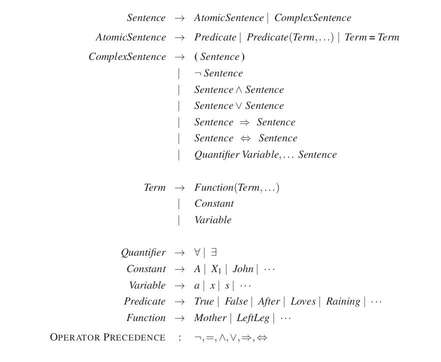
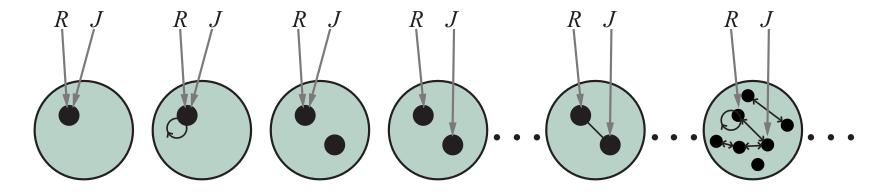
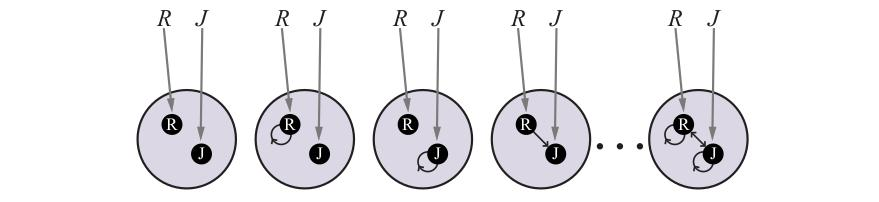
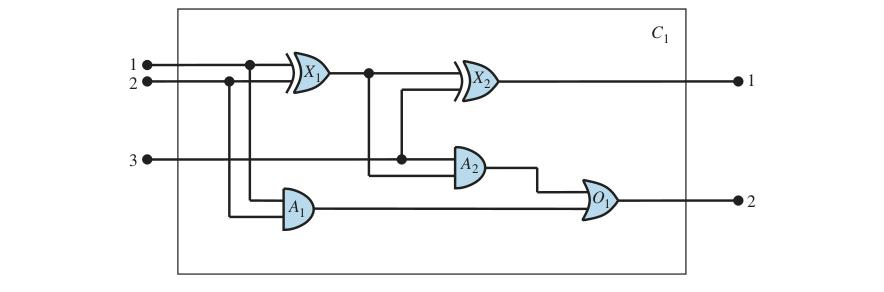

فصل ۸: منطق مرتبهٔ اول (First-Order Logic)
منطق گزارهای برای نشان دادن مفاهیم پایهٔ منطق، استنتاج و عاملهای مبتنی بر دانش کافی بود. متأسفانه، منطق گزارهای در آنچه میتواند بگوید محدود است. در این فصل، «منطق مرتبهٔ اول»¹ را بررسی میکنیم که میتواند بهصورت موجز بسیار بیشتر را بازنمایی کند. در بخش ۸.۱ با بحث دربارهٔ زبانهای بازنمایی بهطور کلی آغاز میکنیم؛ بخش ۸.۲ نحو و معناشناسی منطق مرتبهٔ اول را پوشش میدهد؛ بخشهای 8.3 و 8.4 کاربرد منطق مرتبهٔ اول را برای بازنماییهای ساده نشان میدهند.
در این بخش دربارهٔ سرشت زبانهای بازنمایی بحث میکنیم. زبانهای برنامهنویسی (مانند C++ یا جاوا یا پایتون) بزرگترین ردهٔ زبانهای صوریِ در حال استفادهٔ معمولاند. ساختارهای دادهٔ درون برنامهها را میتوان برای بازنمایی واقعیتها استفاده کرد؛ برای نمونه، برنامهای میتواند از آرایهٔ 4×4 برای بازنمایی محتوای جهان وومپوس استفاده کند. پس گزارهٔ زبان برنامهنویسی World[2,2]←Pit راه نسبتاً طبیعیای برای ادعای اینکه در خانهٔ [2,2] گودالی هست است. به هم چسباندن رشتهای از چنین گزارههایی برای اجرای شبیهسازی جهان وومپوس کافی است.
آنچه زبانهای برنامهنویسی فاقد آناند، سازوکاری عمومی برای مشتقکردن واقعیتها از واقعیتهای دیگر است؛ هر بهروزرسانی ساختار داده توسط رویهٔ حوزهویژهای انجام میشود که جزئیاتش توسط برنامهنویس از دانش خودش از حوزه استخراج میشود. این رویکرد رویهای را میتوان با سرشت اعلانی منطق گزارهای مقایسه کرد، که در آن دانش و استنتاج جدا از هماند و استنتاج کاملاً مستقل از حوزه است. پایگاههای دادهٔ SQL ترکیبی از دانش اعلانی و رویهای میگیرند.
دومین نقطهضعف ساختارهای داده در برنامهها (و پایگاههای داده)، نبود راهی آسان برای گفتن مثلاً «در [2,2] یا [3,1] گودالی هست» یا «اگر وومپوس در [1,1] است پس در [2,2] نیست» است. برنامهها میتوانند مقدار تکیای برای هر متغیر ذخیره کنند و برخی سامانهها اجازه میدهند مقدار «ناشناخته» باشد، اما فاقد قدرت بیانی لازم برای سروکار داشتن مستقیم با اطلاعات جزئیاند.
منطق گزارهای زبان اعلانی است، زیرا معناشناسیاش بر رابطهٔ صدق میان جملهها و جهانهای ممکن مبتنی است. همچنین قدرت بیانی کافی برای سروکار داشتن با اطلاعات جزئی، با استفاده از فصل و نقیض، دارد. منطق گزارهای ویژگی سومی دارد که در زبانهای بازنمایی مطلوب است، یعنی «ترکیبپذیری» (Compositionality). در زبان ترکیبپذیر، معنای جمله تابعی از معنای اجزایش است. برای نمونه، معنای «S1,4 ∧ S1,2» به معانی «S1,4» و «S1,2» مربوط است. بسیار عجیب میبود اگر «S1,4» معنا میداد در خانهٔ [1,4] بوی گندی هست و «S1,2» معنا میداد در خانهٔ [1,2] بوی گندی هست، اما «S1,4 ∧ S1,2» معنا میداد فرانسه و لهستان در مسابقهٔ مقدماتی هاکی روی یخ هفتهٔ پیش 1–1 مساوی کردند.
اما منطق گزارهای، بهعنوان بازنمایی عاملی، فاقد قدرت بیانی برای توصیف موجز محیطی با اشیای فراوان است. برای نمونه، مجبور شدیم برای هر خانه قاعدهٔ جداگانهای دربارهٔ نسیمها و گودالها بنویسیم، مانند:
B1,1 ⇔ (P1,2 ∨ P2,1)به انگلیسی، از سوی دیگر، به نظر میرسد بهسادگی میتوان یکبار برای همیشه گفت: «خانههای مجاور گودالها نسیمدارند.» نحو و معناشناسی انگلیسی توصیف موجز محیط را ممکن میکند: انگلیسی، مانند منطق مرتبهٔ اول، بازنمایی ساختاریافته است.
زبانهای طبیعی (مانند انگلیسی یا اسپانیایی) واقعاً بسیار بیانیاند. ما توانستیم تقریباً تمام این کتاب را به زبان طبیعی بنویسیم، با لغزشهای گاهبهگاه به زبانهای دیگر (عمدتاً ریاضیات و نمودارها). سنت بلندی در زبانشناسی و فلسفهٔ زبان هست که زبان طبیعی را زبان بازنمایی دانش اعلانی میبیند. اگر میتوانستیم قواعد زبان طبیعی را کشف کنیم، میتوانستیم از آنها در سامانههای بازنمایی و استدلال استفاده کنیم و از سود میلیاردها صفحهای که به زبان طبیعی نوشته شده بهره ببریم.
دیدگاه مدرن زبان طبیعی آن است که بهعنوان رسانهای برای ارتباط خدمت میکند نه بازنمایی ناب. وقتی گویندهای اشاره میکند و میگوید «نگاه کن!»، شنونده میفهمد که مثلاً سوپرمن سرانجام بر فراز بامها ظاهر شده. اما نمیخواهیم بگوییم جملهٔ «نگاه کن!» آن واقعیت را بازنمایی میکند. بلکه، معنای جمله هم به خودِ جمله و هم به بافتی که جمله در آن گفته شده بستگی دارد. بدیهی است نمیشد جملهای مانند «نگاه کن!» را در پایگاه دانش ذخیره کرد و انتظار بازیابی معنایش را داشت بدون آنکه بازنمایی بافت را نیز ذخیره کرد — که این پرسش را پیش میآورد که خودِ بافت چگونه بازنمایی میشود.
زبانهای طبیعی همچنین از ابهام رنج میبرند، مسئلهای برای زبان بازنمایی. چنانکه پینکر (۱۹۹۵) میگوید: «وقتی مردم به بهار میاندیشند، قطعاً گیج نمیشوند که به فصل فکر میکنند یا به چیزی که صدای بونگ میدهد — و اگر یک واژه بتواند با دو اندیشه متناظر باشد، اندیشهها نمیتوانند واژه باشند.»
فرضیهٔ نامدار ساپیر–ورف (ورف، ۱۹۵۶) ادعا میکند فهم ما از جهان بهشدت تحت تأثیر زبانی است که به آن صحبت میکنیم. قطعاً درست است که جوامع گفتاری متفاوت جهان را متفاوت تقسیم میکنند. فرانسویها دو واژهٔ «chaise» و «fauteuil» دارند، برای مفهومی که انگلیسیزبانها با یک واژه میپوشانند: «chair». اما انگلیسیزبانها بهراحتی میتوانند ردهٔ fauteuil را تشخیص دهند و نامی برایش بگذارند — تقریباً «صندلی دستهباز» — پس آیا زبان واقعاً تفاوت ایجاد میکند؟ ورف عمدتاً به شهود و حدس تکیه میکرد و ایدههایش تا حد زیادی کنار گذاشته شده، اما در سالهای میانی در واقع دادههای واقعی از مطالعات مردمشناختی، روانشناختی و عصبشناختی داریم.
برای نمونه، آیا میتوانید به یاد آورید کدام یک از دو عبارت زیر آغازگر بخش 8.1 بود؟
«در این بخش، دربارهٔ سرشت زبانهای بازنمایی بحث میکنیم ...» «این بخش موضوع زبانهای بازنمایی دانش را پوشش میدهد ...»
وانر (۱۹۷۴) آزمایش مشابهی انجام داد و یافت آزمودنیها در سطح شانس — حدود ۵۰٪ مواقع — انتخاب درست را میکردند، اما محتوای آنچه خواندند را با دقت بیش از ۹۰٪ به خاطر میآوردند. این پیشنهاد میکند مردم واژههایی را که میخوانند تفسیر میکنند و بازنمایی درونیِ غیرکلامی میسازند و واژههای دقیق چندان اهمیت ندارند.
جالبتر موردی است که مفهومی کاملاً در زبانی غایب است. گویندگان زبان بومی استرالیایی گوگو ییمیتیر هیچ واژهای برای جهتهای نسبی (یا خودمحور) مانند جلو، عقب، راست یا چپ ندارند. در عوض از جهتهای مطلق استفاده میکنند و مثلاً معادل «دستم شمالی درد میکند» را میگویند. این تفاوت در زبان تفاوتی در رفتار ایجاد میکند: گویندگان گوگو ییمیتیر در ناوبری در زمین باز بهترند، در حالی که انگلیسیزبانها در گذاشتن چنگال سمت راست بشقاب بهترند.
زبان همچنین به نظر میرسد از طریق ویژگیهای دستوریِ ظاهراً دلبخواهی مانند جنسیت اسمها بر اندیشه تأثیر میگذارد. برای نمونه، «bridge» (پل) در اسپانیایی مذکر و در آلمانی مؤنث است. بورودیتسکی (۲۰۰۳) از آزمودنیها خواست صفتهای انگلیسی برای توصیف عکسی از پلی خاص برگزینند. اسپانیاییزبانها big، dangerous، strong و towering را برگزیدند، در حالی که آلمانیزبانها beautiful، elegant، fragile و slender را.
واژهها میتوانند بهعنوان نقطههای لنگر خدمت کنند که بر شیوهٔ ادراک ما از جهان اثر میگذارند. لافتوس و پالمر (۱۹۷۴) به آزمودنیهای تجربی فیلمی از تصادف خودرو نشان دادند. آزمودنیهایی که از آنها پرسیده شد «خودروها وقتی به هم برخورد کردند چقدر سریع میرفتند؟» میانگین ۳۲ مایل بر ساعت گزارش کردند، در حالی که آزمودنیهایی که پرسش با واژهٔ «smashed» (کوبیده شدند) بهجای «contacted» پرسیده شد، برای همان خودروها در همان فیلم ۴۱ مایل بر ساعت گزارش کردند. در مجموع، تفاوتهای قابل اندازهگیری اما کوچکی در پردازش شناختی گویندگان زبانهای مختلف هست، اما هیچ شواهد قانعکنندهای نیست که این به تفاوت عمدهای در جهانبینی میانجامد.
در سامانهٔ استدلال منطقی که از شکل عادی عطفی (CNF) استفاده میکند، میبینیم شکلهای زبانی «¬(A ∨ B)» و «¬A ∧ ¬B» یکساناند، زیرا میتوانیم به درون سامانه نگاه کنیم و ببینیم دو جمله بهصورت همان شکل CNF متعارف ذخیره شدهاند. شروع به ممکنشدن کرده بتوانیم با مغز انسان کار مشابهی بکنیم. میچل و همکاران (۲۰۰۸) آزمودنیها را در دستگاه تصویربرداری تشدید مغناطیسی کارکردی (fMRI) گذاشتند، واژههایی مانند «celery» (کرفس) نشانشان دادند و مغزشان را تصویربرداری کردند. برنامهٔ یادگیری ماشینِ آموزشدیده با جفتهای (واژه، تصویر) توانست در تکلیفهای انتخاب دودویی (مثلاً «کرفس» یا «هواپیما») در ۷۷٪ مواقع درست پیشبینی کند. سامانه حتی میتواند برای واژههایی که هرگز تصویر fMRI از آنها ندیده (با در نظر گرفتن تصاویر واژههای مرتبط) و برای افرادی که هرگز ندیده (که اثبات میکند fMRI سطحی از بازنمایی مشترک میان مردم را آشکار میکند) بالاتر از سطح شانس پیشبینی کند. این نوع کار هنوز در مراحل آغازین است، اما fMRI (و دیگر فناوریهای تصویربرداری مانند الکتروفیزیولوژی درونجمجمهای (ساهین و همکاران، ۲۰۰۹)) وعده میدهد ایدههای بسیار عینیتری از اینکه بازنماییهای دانش انسانی چگونهاند به ما بدهد.
از دیدگاه منطق صوری، بازنمایی همان دانش به دو روش متفاوت هیچ تفاوتی ایجاد نمیکند؛ همان واقعیتها از هر دو بازنمایی قابل اشتقاق خواهند بود. در عمل اما، یک بازنمایی ممکن است به گامهای کمتری برای استنتاج نتیجهای نیاز داشته باشد، یعنی استدلالگری با منابع محدود میتواند با یک بازنمایی به نتیجه برسد اما با دیگری نه. برای تکلیفهای غیرقیاسی مانند یادگیری از تجربه، پیامدها لزوماً به شکل بازنماییهای استفادهشده وابستهاند. در فصل ۱۹ نشان میدهیم وقتی برنامهٔ یادگیری دو نظریهٔ ممکن از جهان را در نظر میگیرد که هر دو با همهٔ دادهها سازگارند، رایجترین راه شکستن تساوی انتخاب موجزترین نظریه است — و آن به زبانِ استفادهشده برای بازنمایی نظریهها بستگی دارد. پس تأثیر زبان بر اندیشه برای هر عاملی که یادگیری انجام میدهد اجتنابناپذیر است.
میتوانیم بنیان منطق گزارهای — معناشناسی اعلانی، ترکیبپذیر، مستقل از بافت و بدونابهام — را بپذیریم و منطق بیانیتری بر آن بنیان بسازیم، با قرضگرفتن ایدههای بازنمایشی از زبان طبیعی در حالی که از نقطهضعفهایش میپرهیزیم. وقتی به نحو زبان طبیعی نگاه میکنیم، بدیهیترین عناصر، اسمها و گروههای اسمیاند که به اشیا (Object) اشاره میکنند (خانهها، گودالها، وومپوسها) و فعلها و گروههای فعلی همراه با صفتها و قیدها که به روابط (Relations) میان اشیا اشاره میکنند (نسیمدار است، مجاور است، شلیک میکند). برخی از این روابط توابعاند — روابطی که در آنها فقط یک «مقدار» برای «ورودیِ» دادهشده هست. بهراحتی میتوان فهرستکردن مثالهایی از اشیا، روابط و توابع را آغاز کرد:
در واقع، تقریباً هر ادعایی را میتوان اشاره به اشیا و ویژگیها یا روابط دانست. چند مثال در پی میآید:
اشیا: یک، دو، سه، یک بهعلاوهٔ دو؛ رابطه: برابر است؛ تابع: بهعلاوه. («یک بهعلاوهٔ دو» نامی برای شیئی است که با اعمال تابع «بهعلاوه» بر اشیای «یک» و «دو» به دست میآید. «سه» نام دیگری برای این شیء است.)
اشیا: وومپوس، خانهها؛ ویژگی: بدبو؛ رابطه: همسایه.
اشیا: جان، انگلستان، ۱۲۰۰؛ رابطه: در طول حکومت کرد؛ ویژگیها: شرور، پادشاه.
زبان منطق مرتبهٔ اول، که نحو و معناشناسیاش را در بخش بعد تعریف میکنیم، حول اشیا و روابط ساخته شده. این زبان برای ریاضیات، فلسفه و هوش مصنوعی دقیقاً بهسبب آن مهم بوده که آن حوزهها — و در واقع، بخش بزرگی از وجود روزمرهٔ انسان — را میتوان سودمندانه سروکار داشتن با اشیا و روابط میان آنها دانست. منطق مرتبهٔ اول همچنین میتواند واقعیتهایی دربارهٔ برخی یا همهٔ اشیای جهان بیان کند. این امکان بازنمایی قوانین یا قواعد عمومی را میدهد، مانند گزارهٔ «خانههای همسایهٔ وومپوس بدبو هستند.»
تفاوت اصلی میان منطق گزارهای و مرتبهٔ اول در «تعهد هستیشناختی» (Ontological Commitment) هر زبان نهفته است — یعنی آنچه دربارهٔ سرشت واقعیت فرض میکند. بهصورت ریاضی، این تعهد از طریق سرشت مدلهای صوریای بیان میشود که صدق جملهها نسبت به آنها تعریف میشود. برای نمونه، منطق گزارهای فرض میکند واقعیتهایی هست که یا در جهان برقرارند یا برقرار نیستند. هر واقعیت میتواند در یکی از دو حالت باشد — صادق یا کاذب — و هر مدل به هر نماد گزاره صادق یا کاذب تخصیص میدهد (بخش 7.4.2 را ببینید). منطق مرتبهٔ اول بیشتر فرض میکند؛ namely اینکه جهان از اشیایی با روابط معینی میان آنها تشکیل شده که برقرارند یا برقرار نیستند. (شکل ۸.۱ را ببینید.) مدلهای صوری متناظراً پیچیدهتر از مدلهای منطق گزارهایاند.
| زبان | تعهد هستیشناختی (چه چیزی در جهان وجود دارد) | تعهد شناختی (عامل دربارهٔ واقعیتها چه باوری دارد) |
|---|---|---|
| منطق گزارهای | واقعیتها | صادق/کاذب/ناشناخته |
| منطق مرتبهٔ اول | واقعیتها، اشیا، روابط | صادق/کاذب/ناشناخته |
| منطق زمانی | واقعیتها، اشیا، روابط، زمانها | صادق/کاذب/ناشناخته |
| نظریهٔ احتمال | واقعیتها | درجهٔ باور ∈ [0,1] |
| منطق فازی | واقعیتها با درجهٔ صدق ∈ [0,1] | مقدار بازهای شناختهشده |
این تعهد هستیشناختی نقطهٔ قوت بزرگی برای منطق است (هم گزارهای و هم مرتبهٔ اول)، زیرا به ما امکان میدهد با گزارههای صادق آغاز و گزارههای صادق دیگر استنتاج کنیم. این بهویژه در حوزههایی قدرتمند است که هر گزاره مرزهای روشنی دارد، مانند ریاضیات یا جهان وومپوس، جایی که خانهای یا گودال دارد یا ندارد؛ هیچ امکان خانهای با فرورفتگیِ مبهمِ گودالمانند نیست. اما در جهان واقعی، بسیاری از گزارهها مرزهای مبهم دارند: آیا وین شهر بزرگی است؟ آیا این رستوران غذای خوشمزه سرو میکند؟ آیا آن شخص قدبلند است؟ به این بستگی دارد از چه کسی بپرسید، و پاسخشان ممکن است «یکجورهایی» باشد.
یک پاسخ، پالایش بازنمایی است: اگر خط خامی که شهرها را به «بزرگ» و «نه بزرگ» تقسیم میکند اطلاعات زیادی را برای کاربرد موردنظر از قلم بیندازد، میتوان شمار ردههای اندازه را افزایش داد یا از نماد تابع Population استفاده کرد. راهحل پیشنهادی دیگر از «منطق فازی» (Fuzzy Logic) میآید که تعهد هستیشناختی میکند گزارهها «درجهٔ صدق» (Degree of Truth) بین ۰ و ۱ دارند. برای نمونه، جملهٔ «وین شهر بزرگی است» ممکن است در منطق فازی به درجهٔ ۰٫۸ صادق باشد، در حالی که «پاریس شهر بزرگی است» ممکن است به درجهٔ ۰٫۹ صادق باشد. این با برداشت شهودی ما از جهان همخوانی بهتری دارد، اما استنتاج را دشوارتر میکند: بهجای یک قاعده برای تعیین صدق A ∧ B، منطق فازی به قواعد متفاوتی بسته به حوزه نیاز دارد. امکان دیگر، پوششدادهشده در بخش 24.1، آن است که هر مفهوم را به نقطهای در فضای چندبعدی تخصیص دهیم و سپس فاصلهٔ میان مفهوم «شهر بزرگ» و مفهوم «وین» یا «پاریس» را اندازه بگیریم.
منطقهای ویژهمنظورهٔ گوناگون تعهدهای هستیشناختی بیشتری میکنند؛ برای نمونه، «منطق زمانی» (Temporal Logic) فرض میکند واقعیتها در زمانهای خاصی برقرارند و آن زمانها (که ممکن است نقطه یا بازه باشند) مرتباند. پس منطقهای ویژهمنظوره به انواع خاصی از اشیا (و اصلموضوعههایشان) جایگاه «درجهیک» درون منطق میدهند، بهجای آنکه صرفاً آنها را درون پایگاه دانش تعریف کنند. «منطق مرتبهٔ بالاتر» (Higher-Order Logic) روابط و توابعِ ارجاعشده توسط منطق مرتبهٔ اول را خودِ اشیا میبیند. این به فرد امکان میدهد دربارهٔ همهٔ روابط ادعاهایی بکند — برای نمونه، میتوان خواست تعریف کرد رابطهای متعدی به چه معناست. برخلاف بیشتر منطقهای ویژهمنظوره، منطق مرتبهٔ بالاتر بهطور دقیق از منطق مرتبهٔ اول بیانیتر است، به این معنا که برخی جملههای منطق مرتبهٔ بالاتر را نمیتوان با هیچ شمار متناهیای از جملههای منطق مرتبهٔ اول بیان کرد.
منطق را همچنین میتوان با «تعهدهای شناختی» (Epistemological Commitments)اش مشخص کرد — حالتهای دانش ممکنی که نسبت به هر واقعیت اجازه میدهد. در هر دو منطق گزارهای و مرتبهٔ اول، جملهای واقعیتی را بازنمایی میکند و عامل یا باور دارد جمله صادق است، یا باور دارد کاذب است، یا نظری ندارد. پس این منطقها دربارهٔ هر جمله سه حالت ممکن دانش دارند.
سامانههای استفادهکننده از نظریهٔ احتمال، از سوی دیگر، میتوانند هر درجهٔ باوری، یا احتمال ذهنی، از ۰ (بیباورى کامل) تا ۱ (باور کامل) داشته باشند. مهم است درجهٔ باور در نظریهٔ احتمال را با درجهٔ صدق در منطق فازی اشتباه نگیریم. در واقع، برخی سامانههای فازی عدم قطعیت (درجهٔ باور) دربارهٔ درجههای صدق را مجاز میدانند. برای نمونه، عامل احتمالاتی جهان وومپوس ممکن است باور کند وومپوس با احتمال ۰٫۷۵ در [1,3] و با احتمال ۰٫۲۵ در [2,3] است (هرچند وومپوس قطعاً در یک خانهٔ خاص است).
این بخش را با مشخصکردن دقیقتر شیوهای آغاز میکنیم که جهانهای ممکن منطق مرتبهٔ اول تعهد هستیشناختی به اشیا و روابط را بازتاب میدهند. سپس عناصر گوناگون زبان را معرفی میکنیم و معناشناسیشان را هنگام پیشرفتن توضیح میدهیم. نکتههای اصلی چگونگی تسهیل بازنماییهای موجز توسط زبان و چگونگی انجام معناشناسیاش به رویههای استدلال درست است.
فصل ۷ گفت مدلهای زبان منطقی ساختارهای صوریای هستند که جهانهای ممکنِ تحتبررسی را تشکیل میدهند. هر مدل واژگان جملههای منطقی را به عناصر جهان ممکن پیوند میزند، تا صدق هر جمله تعیین شود. پس مدلهای منطق گزارهای نمادهای گزاره را به مقادیر صدق ازپیشتعریفشده پیوند میزنند.
مدلهای منطق مرتبهٔ اول بسیار جالبترند. نخست، آنها اشیا در خود دارند! «دامنه» (Domain) مدل مجموعهٔ اشیا یا «عناصر دامنه» (Domain Elements) آن است. دامنه لازم است غیرخالی باشد — هر جهان ممکن باید دستکم یک شیء داشته باشد. (تمرین ۸.EMPT را برای بحث دربارهٔ جهانهای خالی ببینید.) از نظر ریاضی، مهم نیست این اشیا چهاند — فقط مهم است در هر مدل خاص چندتا هستند — اما برای اهداف آموزشی از مثال عینی استفاده میکنیم. شکل ۸.۲ مدلی با پنج شیء نشان میدهد: ریچارد شیردل، پادشاه انگلستان از ۱۱۸۹ تا ۱۱۹۹؛ برادر کوچکترش، پادشاه شرور جان، که از ۱۱۹۹ تا ۱۲۱۵ حکومت کرد؛ پای چپ ریچارد و جان؛ و تاجی.
اشیای مدل ممکن است به شیوههای گوناگون مرتبط باشند. در شکل، ریچارد و جان برادرند. بهصورت صوری، رابطه فقط مجموعهای از چندتاییهای (Tuples) اشیای مرتبط است. (چندتایی مجموعهای از اشیاست که در ترتیب ثابتی چیده شده و با کمانکهای دور اشیا نوشته میشود.) پس رابطهٔ برادری در این مدل مجموعهٔ زیر است:
{⟨ریچارد شیردل، پادشاه جان⟩, ⟨پادشاه جان، ریچارد شیردل⟩} (8.1)(در اینجا اشیا را به انگلیسی نامگذاری کردهایم، اما میتوانید اگر خواستید ذهناً تصویرها را بهجای نامها بگذارید.) تاج بر سر پادشاه جان است، پس رابطهٔ «بر سر» فقط یک چندتایی دارد، ⟨تاج، پادشاه جان⟩. روابط «برادر» و «بر سر» روابط دوتاییاند — یعنی جفتهای اشیا را مرتبط میکنند. مدل همچنین روابط یکتایی، یا ویژگیها، دارد: ویژگی «شخص» برای هر دو ریچارد و جان صادق است؛ ویژگی «پادشاه» فقط برای جان صادق است (احتمالاً بهسبب آنکه ریچارد در این نقطه مرده)؛ و ویژگی «تاج» فقط برای تاج صادق است.
انواع خاصی از روابط بهتر است توابع در نظر گرفته شوند، از آن رو که شیءِ دادهشده باید دقیقاً با یک شیء از این راه مرتبط باشد. برای نمونه، هر شخص یک پای چپ دارد، پس مدل تابع یکتایی «پای چپ» دارد — نگاشتی از چندتاییِ تکعنصری به شیء — که شامل نگاشتهای زیر است:
⟨ریچارد شیردل⟩ → پای چپ ریچارد
⟨پادشاه جان⟩ → پای چپ جان (8.2)به بیان دقیق، مدلهای منطق مرتبهٔ اول به توابع کامل (Total Functions) نیاز دارند، یعنی باید برای هر چندتایی ورودی مقداری باشد. پس تاج باید پای چپ داشته باشد و هر یک از پایهای چپ نیز. راهحل فنی برای این مسئلهٔ ناخوشایند شامل شیء «نامرئی» اضافیای است که پای چپ هر چیزی است که پای چپ ندارد، از جمله خودش. خوشبختانه، تا وقتی هیچ ادعایی دربارهٔ پایهای چپِ چیزهای بدون پای چپ نمیکنیم، این ظرافتهای فنی بیاهمیتاند.
تاکنون عناصری را توصیف کردهایم که مدلهای منطق مرتبهٔ اول را پر میکنند. بخش ضروری دیگر مدل، پیوند میان آن عناصر و واژگان جملههای منطقی است که در ادامه توضیح میدهیم.
اکنون به نحو منطق مرتبهٔ اول میپردازیم. خوانندهٔ بیحوصله میتواند توصیف کاملی از دستور زبان صوری شکل ۸.۳ بگیرد.
عناصر نحوی پایهٔ منطق مرتبهٔ اول نمادهایی هستند که برای اشیا، روابط و توابع میایستند. نمادها پس سه نوعاند: «نمادهای ثابت» (Constant Symbols) که برای اشیا میایستند؛ «نمادهای گزارهای» (Predicate Symbols) که برای روابط میایستند؛ و «نمادهای تابع» (Function Symbols) که برای توابع میایستند. این قرارداد را میپذیریم که این نمادها با حروف بزرگ آغاز شوند. برای نمونه، ممکن است از نمادهای ثابت Richard و John استفاده کنیم؛ نمادهای گزارهای Brother، OnHead، Person، King و Crown؛ و نماد تابع LeftLeg. مانند نمادهای گزاره، انتخاب نامها کاملاً به کاربر بستگی دارد. هر نماد گزاره و تابع با «تعداد آرگومان» (Arity) میآید که شمار آرگومانها را ثابت میکند.

هر مدل باید اطلاعات لازم برای تعیین صادق یا کاذببودن هر جملهٔ دادهشده را فراهم کند. پس، علاوه بر اشیا، روابط و توابعش، هر مدل شامل «تفسیری» (Interpretation) است که دقیقاً مشخص میکند نمادهای ثابت، گزاره و تابع به کدام اشیا، روابط و توابع اشاره میکنند. یکی از تفسیرهای ممکن برای مثال ما — که منطقدان آن را «تفسیر موردنظر» (Intended Interpretation) مینامد — چنین است:
تفسیرهای ممکن دیگری نیز هست، البته. برای نمونه، تفسیری Richard را به تاج و John را به پای چپ پادشاه جان نگاشت میکند. پنج شیء در مدل هست، پس فقط برای نمادهای ثابت Richard و John ۲۵ تفسیر ممکن هست.

توجه کنید همهٔ اشیا لازم نیست نام داشته باشند — برای نمونه، تفسیر موردنظر تاج یا پاها را نامگذاری نمیکند. همچنین ممکن است شیئی چند نام داشته باشد؛ تفسیری هست که تحت آن هم Richard و هم John به تاج اشاره میکنند.² اگر این امکان را گیجکننده مییابید، به یاد آورید در منطق گزارهای، کاملاً ممکن است مدلی داشته باشیم که در آن Cloudy و Sunny هر دو صادقاند؛ کار پایگاه دانش است که مدلهای ناسازگار با دانش ما را کنار بگذارد.
در خلاصه، مدل در منطق مرتبهٔ اول از مجموعهای اشیا و تفسیری تشکیل شده که نمادهای ثابت را به اشیا، نمادهای تابع را به توابع روی آن اشیا، و نمادهای گزاره را به روابط نگاشت میکند. دقیقاً مانند منطق گزارهای، لازمه، اعتبار و مانند آن بر حسب همهٔ مدلهای ممکن تعریف میشوند. برای ایدهای از اینکه مجموعهٔ همهٔ مدلهای ممکن چه شکلی است، شکل 8.4 را ببینید. نشان میدهد مدلها در تعداد اشیایی که شامل میشوند — از یک تا بینهایت — و در شیوهٔ نگاشت نمادهای ثابت به اشیا متفاوتاند.
چون شمار مدلهای مرتبهٔ اول بیکران است، نمیتوانیم لازمه را با برشمردن همهٔ آنها بررسی کنیم (چنانکه برای منطق گزارهای کردیم). حتی اگر شمار اشیا محدود شود، شمار ترکیبها میتواند بسیار بزرگ باشد. (تمرین 8.MCNT را ببینید.) برای مثال شکل 8.4، ۱۳۷٬۵۰۶٬۱۹۴٬۴۶۶ مدل با شش شیء یا کمتر هست.
«عبارت» (Term) عبارتِ منطقیِ اشارهکننده به شیء است. نمادهای ثابت عبارتاند، اما همیشه راحت نیست برای نامگذاری هر شیء نماد متمایزی داشته باشیم. در انگلیسی ممکن است از عبارت «پای چپ پادشاه جان» استفاده کنیم بهجای نامدادن به پایش. نمادهای تابع برای ایناند: بهجای استفاده از نماد ثابت، از LeftLeg(John) استفاده میکنیم.³
در حالت کلی، عبارت پیچیده از نماد تابعی تشکیل شده که فهرست پرانتزی از عبارتها بهعنوان آرگومانهای نماد تابع دنبالش میآید. مهم است به یاد آوریم عبارت پیچیده فقط نوع پیچیدهای از نام است. «فراخوانی زیرروال» نیست که «مقداری بازگرداند». زیرروال LeftLeg وجود ندارد که شخصی را ورودی بگیرد و پایی بازگرداند. میتوانیم دربارهٔ پایهای چپ استدلال کنیم (مثلاً قاعدهٔ کلی اینکه هرکس یکی دارد را بیان کنیم و سپس استنتاج کنیم جان باید یکی داشته باشد) بدون آنکه هرگز تعریفی از LeftLeg ارائه دهیم. این چیزی است که با زیرروالها در زبانهای برنامهنویسی نمیشود انجام داد.
معناشناسی صوری عبارتها سرراست است. عبارت f(t1,...,tn) را در نظر بگیرید. نماد تابع f به تابعی در مدل اشاره میکند (آن را F بنامید)؛ عبارتهای آرگومان به اشیایی در دامنه اشاره میکنند (آنها را d1,...,dn بنامید)؛ و کل عبارت به شیئی اشاره میکند که مقدار تابع F اعمالشده بر d1,...,dn است. برای نمونه، فرض کنید نماد تابع LeftLeg به تابع نشاندادهشده در معادلهٔ (8.2) اشاره کند و John به پادشاه جان؛ آنگاه LeftLeg(John) به پای چپ پادشاه جان اشاره میکند. بدین ترتیب، تفسیر مرجع هر عبارت را ثابت میکند.
حال که عبارتهایی برای اشاره به اشیا و نمادهای گزارهای برای اشاره به روابط داریم، میتوانیم آنها را ترکیب کنیم تا «جملههای اتمی» (Atomic Sentences) بسازیم که واقعیتها را بیان میکنند. جملهٔ اتمی (یا به اختصار اتم) از نماد گزارهای تشکیل شده که اختیاراً فهرست پرانتزی از عبارتها دنبالش میآید، مانند:
Brother(Richard, John)این، تحت تفسیر موردنظرِ پیشتردادهشده، بیان میکند ریچارد شیردل برادر پادشاه جان است.⁴ جملههای اتمی میتوانند عبارتهای پیچیده بهعنوان آرگومان داشته باشند. پس،
Married(Father(Richard), Mother(John))بیان میکند پدر ریچارد شیردل با مادر پادشاه جان ازدواج کرده (باز هم، تحت تفسیر مناسبی).⁵
جملهٔ اتمی در مدلِ دادهشده صادق است اگر رابطهای که نماد گزاره به آن اشاره میکند ◮ میان اشیایی که آرگومانها به آنها اشاره میکنند برقرار باشد.
میتوانیم از عوامل ربط منطقی برای ساختن جملههای پیچیدهتر استفاده کنیم، با همان نحو و معناشناسی حساب گزارهای. اینجا چهار جمله هست که در مدل شکل 8.2 تحت تفسیر موردنظرمان صادقاند:
¬Brother(LeftLeg(Richard), John)
Brother(Richard, John) ∧ Brother(John, Richard)
King(Richard) ∨ King(John)
¬King(Richard) ⇒ King(John)وقتی منطقی داریم که اشیا را اجازه میدهد، طبیعی است بخواهیم ویژگیهای کل مجموعههای اشیا را بیان کنیم، بهجای برشمردن اشیا با نام. سورها (Quantifiers) این را ممکن میکنند. منطق مرتبهٔ اول دو سور استاندارد دارد، به نامهای همگانی و وجودی.
سور همگانی (∀)
دشواریای را به یاد آورید که در فصل ۷ با بیان قواعد عمومی در منطق گزارهای داشتیم. قواعدی مانند «خانههای همسایهٔ وومپوس بدبو هستند» و «همهٔ پادشاهان اشخاصاند» نانوکرهٔ منطق مرتبهٔ اولاند. با نخستین مورد در بخش ۸.۳ سروکار داریم. قاعدهٔ دوم، «همهٔ پادشاهان اشخاصاند»، در منطق مرتبهٔ اول چنین نوشته میشود:
∀x King(x) ⇒ Person(x)سور همگانی ∀ معمولاً «برای همهٔ ...» تلفظ میشود. (به یاد آورید A وارونه برای «all» میایستد.) پس جمله میگوید: «برای همهٔ x، اگر x پادشاه است، پس x شخص است.» نماد x «متغیر» (Variable) نامیده میشود. طبق قرارداد، متغیرها حروف کوچکاند. متغیر به خودی خود عبارت است و بهعنوان چنین میتواند آرگومان تابع نیز باشد — برای نمونه، LeftLeg(x). عبارت بدون متغیر «عبارت زمینی» (Ground Term) نامیده میشود.
بهصورت شهودی، جملهٔ ∀x P، که P هر جملهٔ منطقی است، میگوید P برای هر شیء x صادق است. دقیقتر، ∀x P در مدلِ دادهشده صادق است اگر P در همهٔ «تفسیرهای بسطیافته» (Extended Interpretations) ممکنِ ساختهشده از تفسیرِ دادهشده در مدل صادق باشد، که هر تفسیر بسطیافته عنصر دامنهای را مشخص میکند که x به آن اشاره میکند.
این پیچیده به نظر میرسد، اما واقعاً فقط بیان دقیقی از معنای شهودی سور همگانی است. مدل نشاندادهشده در شکل 8.2 و تفسیر موردنظرِ همراه آن را در نظر بگیرید. میتوانیم تفسیر را به پنج طریق بسط دهیم:
x → ریچارد شیردل، x → پادشاه جان، x → پای چپ ریچارد، x → پای چپ جان، x → تاج.
جملهٔ سوردار ∀x King(x) ⇒ Person(x) در مدل اصلی صادق است اگر جملهٔ King(x) ⇒ Person(x) تحت هر یک از پنج تفسیر بسطیافته صادق باشد. یعنی جملهٔ سوردار همارز ادعای پنج جملهٔ زیر است:
ریچارد شیردل پادشاه است ⇒ ریچارد شیردل شخص است.
پادشاه جان پادشاه است ⇒ پادشاه جان شخص است.
پای چپ ریچارد پادشاه است ⇒ پای چپ ریچارد شخص است.
پای چپ جان پادشاه است ⇒ پای چپ جان شخص است.
تاج پادشاه است ⇒ تاج شخص است.به این مجموعه ادعاها دقیق نگاه کنیم. چون در مدل ما پادشاه جان تنها پادشاه است، جملهٔ دوم ادعا میکند او شخص است، چنانکه امیدوار بودیم. اما چهار جملهٔ دیگر که ظاهراً دربارهٔ پاها و تاج ادعا میکنند چه؟ آیا آن بخشی از معنای «همهٔ پادشاهان اشخاصاند» است؟ در واقع، چهار ادعای دیگر در مدل صادقاند، اما هیچ ادعایی دربارهٔ صلاحیت شخصبودن پاها، تاجها یا در واقع ریچارد نمیکنند. این بهسبب آن است که هیچیک از این اشیا پادشاه نیستند. با نگاه به جدول صدق ⇒ (شکل 7.8 در صفحهٔ ۲۱۹)، میبینیم دلالت هرگاه مقدمش کاذب باشد صادق است — صرفنظر از صدق تالی. پس با ادعای جملهٔ سوردار، که همارز ادعای فهرست کاملی از دلالتهای فردی است، در نهایت تالی قاعده را فقط برای آن اشیایی ادعا میکنیم که مقدم برایشان صادق است و دربارهٔ اشیایی که مقدم برایشان کاذب است هیچچیز نمیگوییم. پس تعریف جدول-صدقی ⇒ برای نوشتن قواعد عمومی با سورهای همگانی عالی از آب درمیآید.
اشتباه رایجی که حتی خوانندگان کوشایی که این بند را چند بار خواندهاند مکرراً مرتکب میشوند، استفاده از عطف بهجای دلالت است. جملهٔ
∀x King(x) ∧ Person(x)همارز ادعای اینها خواهد بود:
ریچارد شیردل پادشاه است ∧ ریچارد شیردل شخص است،
پادشاه جان پادشاه است ∧ پادشاه جان شخص است،
پای چپ ریچارد پادشاه است ∧ پای چپ ریچارد شخص است،
و الی آخر.بدیهی است این آن چیزی را که میخواهیم در بر نمیگیرد.
سور وجودی (∃)
سور همگانی دربارهٔ هر شیء گزاره میسازد. به همین ترتیب، میتوانیم دربارهٔ شیئی بدون نامبردن از آن، با استفاده از سور وجودی، گزاره بسازیم. برای گفتن مثلاً اینکه پادشاه جان تاجی بر سر دارد، مینویسیم:
∃x Crown(x) ∧ OnHead(x, John)∃x تلفظ میشود «چنان x ای وجود دارد که ...» یا «برای برخی x ...».
بهصورت شهودی، جملهٔ ∃x P میگوید P برای دستکم یک شیء x صادق است. دقیقتر، ∃x P در مدلِ دادهشده صادق است اگر P در دستکم یک تفسیر بسطیافته که x را به عنصر دامنهای تخصیص میدهد صادق باشد. یعنی دستکم یکی از موارد زیر صادق است:
ریچارد شیردل تاج است ∧ ریچارد شیردل بر سر جان است؛
پادشاه جان تاج است ∧ پادشاه جان بر سر جان است؛
پای چپ ریچارد تاج است ∧ پای چپ ریچارد بر سر جان است؛
پای چپ جان تاج است ∧ پای چپ جان بر سر جان است؛
تاج تاج است ∧ تاج بر سر جان است.ادعای پنجم در مدل صادق است، پس جملهٔ وجودیِ اصلی در مدل صادق است. توجه کنید، طبق تعریفمان، جمله در مدلی نیز صادق میبود که پادشاه جان دو تاج بر سر داشت. این کاملاً با جملهٔ اصلی «پادشاه جان تاجی بر سر دارد» سازگار است.⁶
درست همانگونه که ⇒ عامل ربط طبیعی برای استفاده با ∀ به نظر میرسد، ∧ عامل ربط طبیعی برای استفاده با ∃ است. استفاده از ∧ بهعنوان عامل ربط اصلی با ∀ به گزارهای بیش از حد قوی در مثال بخش قبل انجامید؛ استفاده از ⇒ با ∃ معمولاً به گزارهای بسیار ضعیف میانجامد، واقعاً. جملهٔ زیر را در نظر بگیرید:
∃x Crown(x) ⇒ OnHead(x, John)در ظاهر، این ممکن است بازگویی معقولی از جملهٔ ما به نظر برسد. با اعمال معناشناسی، میبینیم جمله میگوید دستکم یکی از ادعاهای زیر صادق است:
ریچارد شیردل تاج است ⇒ ریچارد شیردل بر سر جان است؛
پادشاه جان تاج است ⇒ پادشاه جان بر سر جان است؛
پای چپ ریچارد تاج است ⇒ پای چپ ریچارد بر سر جان است؛
و الی آخر.دلالت اگر هر دو مقدم و تالی صادق باشند، یا اگر مقدم کاذب باشد، صادق است؛ پس اگر ریچارد شیردل تاج نباشد، ادعای اول صادق و سور وجودی ارضا میشود. پس جملهٔ دلالتیِ سوردار هرگاه هر شیئی در برآوردن مقدم ناکام باشد صادق است؛ از این رو چنین جملههایی واقعاً چیز زیادی نمیگویند.
سورهای تودرتو
اغلب میخواهیم جملههای پیچیدهتری با چند سور بیان کنیم. سادهترین حالت آن است که سورها از یک نوع باشند. برای نمونه، «برادرها خواهروبرادرند» را میتوان چنین نوشت:
∀x ∀y Brother(x, y) ⇒ Sibling(x, y)سورهای پیاپیِ همنوع را میتوان بهصورت یک سور با چند متغیر نوشت. برای نمونه، برای گفتن اینکه رابطهٔ خواهروبرادری متقارن است، میتوانیم بنویسیم:
∀x,y Sibling(x, y) ⇔ Sibling(y, x)در موارد دیگر ترکیبهایی خواهیم داشت. «همهکس کسی را دوست دارد» یعنی برای هر شخص، کسی هست که آن شخص او را دوست دارد:
∀x ∃y Loves(x, y)از سوی دیگر، برای گفتن «کسی هست که همه او را دوست دارند»، مینویسیم:
∃y ∀x Loves(x, y)ترتیب سورها پس بسیار مهم است. با درج پرانتزها روشنتر میشود. ∀x (∃y Loves(x, y)) میگوید هرکس ویژگی خاصی دارد، namely ویژگیِ دوستداشتن کسی. از سوی دیگر، ∃y (∀x Loves(x, y)) میگوید کسی در جهان ویژگی خاصی دارد، namely ویژگیِ دوستداشتهشدن توسط همه.
سردرگمی میتواند پیش آید وقتی دو سور با همان نام متغیر استفاده شوند. جملهٔ زیر را در نظر بگیرید:
∀x (Crown(x) ∨ (∃x Brother(Richard, x)))در اینجا x در Brother(Richard, x) وجودی سوردار شده. قاعده آن است که متغیر به درونیترین سوری تعلق دارد که به آن اشاره میکند؛ پس تابع هیچ سور دیگری نخواهد بود. راه دیگر اندیشیدن به آن این است: ∃x Brother(Richard, x) جملهای دربارهٔ ریچارد است (که برادری دارد)، نه دربارهٔ x؛ پس گذاشتن ∀x بیرونش اثری ندارد. به همان خوبی میشد ∃z Brother(Richard, z) نوشت. چون این میتواند منبع سردرگمی باشد، همیشه با سورهای تودرتو از نامهای متغیر متفاوت استفاده خواهیم کرد.
پیوندهای میان ∀ و ∃
دو سور در واقع از طریق نقیض بهشکل صمیمانهای به هم متصلاند. ادعای اینکه همه از جعفری بدشان میآید همان ادعای عدم وجود کسی است که آن را دوست دارد، و برعکس:
∀x ¬Likes(x, Parsnips)همارز است با:
¬∃x Likes(x, Parsnips)میتوانیم یک گام فراتر برویم: «همه بستنی دوست دارند» یعنی هیچکس نیست که بستنی دوست نداشته باشد:
∀x Likes(x, IceCream)همارز است با:
¬∃x ¬Likes(x, IceCream)چون ∀ واقعاً عطفی بر روی جهان اشیاست و ∃ فصلی، تعجبآور نیست که از قواعد دمورگان پیروی میکنند. قواعد دمورگان برای جملههای سوردار و بیسور چنیناند:
| ¬∃x P ≡ ∀x ¬P | ¬(P ∨ Q) ≡ ¬P ∧ ¬Q |
|---|---|
| ¬∀x P ≡ ∃x ¬P | ¬(P ∧ Q) ≡ ¬P ∨ ¬Q |
| ∀x P ≡ ¬∃x ¬P | P ∧ Q ≡ ¬(¬P ∨ ¬Q) |
| ∃x P ≡ ¬∀x ¬P | P ∨ Q ≡ ¬(¬P ∧ ¬Q) |
پس واقعاً به هر دو ∀ و ∃ نیاز نداریم، درست همانگونه که واقعاً به هر دو ∧ و ∨ نیاز نداریم. باز هم، خوانایی از سادگی مهمتر است، پس هر دو سور را نگه میداریم.
منطق مرتبهٔ اول یک راه دیگر برای ساختن جملههای اتمی دارد، غیر از استفاده از گزاره و عبارتها چنانکه پیشتر توصیف شد. میتوانیم از «نماد برابری» (Equality Symbol) برای دلالت بر اینکه دو عبارت به همان شیء اشاره میکنند استفاده کنیم. برای نمونه،
Father(John) = Henryمیگوید شیئی که Father(John) به آن اشاره میکند و شیئی که Henry به آن اشاره میکند یکیاند. چون تفسیر مرجع هر عبارت را ثابت میکند، تعیین صدق جملهٔ برابری صرفاً دیدن یکسانبودن مرجعهای دو عبارت است.
نماد برابری را میتوان برای بیان واقعیتهایی دربارهٔ تابعِ دادهشده استفاده کرد، چنانکه برای نماد Father کردیم. همچنین میتوان با نقیض از آن استفاده کرد تا اصرار کنیم دو عبارت به شیء یکسانی اشاره نمیکنند. برای گفتن اینکه ریچارد دستکم دو برادر دارد، مینویسیم:
∃x,y Brother(x, Richard) ∧ Brother(y, Richard) ∧ ¬(x = y)جملهٔ
∃x,y Brother(x, Richard) ∧ Brother(y, Richard)معنای موردنظر را ندارد. بهویژه، در مدل شکل 8.2 صادق است، جایی که ریچارد فقط یک برادر دارد. برای دیدن این، تفسیر بسطیافتهای را در نظر بگیرید که در آن هر دو x و y به پادشاه جان تخصیص یافتهاند. افزودن ¬(x = y) چنین مدلهایی را کنار میگذارد. نماد x ≠ y گاهی بهعنوان اختصار ¬(x = y) استفاده میشود.
با ادامهٔ مثال بخش قبل، فرض کنیم باور داریم ریچارد دو برادر دارد، جان و جفری.⁷ میتوانیم بنویسیم:
Brother(John, Richard) ∧ Brother(Geoffrey, Richard) (8.3)اما این وضعیت امور را کامل در نمیگیرد. نخست، این ادعا در مدلی صادق است که ریچارد فقط یک برادر دارد — باید John ≠ Geoffrey را اضافه کنیم. دوم، جمله مدلهایی را که ریچارد برادرهای بسیار بیشتری علاوه بر جان و جفری دارد کنار نمیگذارد. پس ترجمهٔ درست «برادرهای ریچارد جان و جفریاند» چنین است:
Brother(John, Richard) ∧ Brother(Geoffrey, Richard) ∧ John ≠ Geoffrey ∧ ∀x Brother(x, Richard) ⇒ (x = John ∨ x = Geoffrey)این جملهٔ منطقی بسیار دستوپاگیرتر از جملهٔ انگلیسی متناظرش به نظر میرسد. اما اگر انگلیسی را درست ترجمه نکنیم، سامانهٔ استدلال منطقیمان اشتباه خواهد کرد. آیا میتوانیم معناشناسیای ابداع کنیم که جملهٔ منطقی سرراستتری را اجازه دهد؟
پیشنهادی که در سامانههای پایگاهداده بسیار محبوب است چنین کار میکند. نخست، اصرار میکنیم هر نماد ثابت به شیء متمایزی اشاره کند — «فرض نامهای یکتا» (Unique-Names Assumption). دوم، فرض میکنیم جملههای اتمیِ شناختهنشدهصادق در واقع کاذباند — «فرض جهان بسته» (Closed-World Assumption). سرانجام، «بستار دامنه» (Domain Closure) را فرا میخوانیم، یعنی هر مدل شامل عناصر دامنهای بیش از آنهایی که توسط نمادهای ثابت نامگذاری شدهاند نیست.

تحت معناشناسی حاصل، معادلهٔ (۸.۳) در واقع بیان میکند ریچارد دقیقاً دو برادر دارد، جان و جفری. این را «معناشناسی پایگاهداده» (Database Semantics) مینامیم تا آن را از معناشناسی استاندارد منطق مرتبهٔ اول متمایز کنیم. معناشناسی پایگاهداده همچنین در سامانههای برنامهنویسی منطقی استفاده میشود، چنانکه در بخش 9.4.4 توضیح داده شده.
آموزنده است مجموعهٔ همهٔ مدلهای ممکن تحت معناشناسی پایگاهداده را برای همان مورد نشاندادهشده در شکل 8.4 (صفحهٔ ۲۵۹) در نظر بگیریم. شکل 8.5 برخی از مدلها را نشان میدهد، از مدل بدون هیچ چندتاییِ ارضاکنندهٔ رابطه تا مدل با همهٔ چندتاییهای ارضاکنندهٔ رابطه. با دو شیء، چهار چندتایی دوعنصری ممکن هست، پس 2⁴ = ۱۶ زیرمجموعهٔ متفاوت از چندتاییها میتوانند رابطه را ارضا کنند. پس در مجموع ۱۶ مدل ممکن هست — بسیار کمتر از مدلهای بیشمار معناشناسی استاندارد مرتبهٔ اول. از سوی دیگر، معناشناسی پایگاهداده به دانش قطعی از آنچه جهان شامل میشود نیاز دارد.
این مثال نکتهٔ مهمی را پیش میآورد: هیچ معناشناسی «درستی» واحدی برای منطق نیست. سودمندی هر معناشناسیِ پیشنهادی به این بستگی دارد که بیان انواع دانشی که میخواهیم بنویسیم را چقدر موجز و شهودی میکند، و به اینکه توسعهٔ قواعد استنتاج متناظر چقدر آسان و طبیعی است. معناشناسی پایگاهداده وقتی مفیدتر است که از هویت همهٔ اشیای توصیفشده در پایگاه دانش مطمئن باشیم و همهٔ واقعیتها را در دست داشته باشیم؛ در موارد دیگر، نسبتاً دستوپاگیر است. برای بقیهٔ این فصل، معناشناسی استاندارد را فرض میکنیم و مواردی را که این انتخاب به عبارتهای دستوپاگیر میانجامد یادآور میشویم.
حال که زبان منطقی بیانیای تعریف کردهایم، بیاموزیم چگونه از آن استفاده کنیم. در این بخش، جملههای نمونهای در چند حوزهٔ ساده ارائه میکنیم. در بازنمایی دانش، «حوزه» (Domain) فقط بخشی از جهان است که میخواهیم دربارهاش دانشی بیان کنیم.
با توصیف کوتاهی از واسط TELL/ASK برای پایگاههای دانش مرتبهٔ اول آغاز میکنیم. سپس به حوزههای روابط خانوادگی، اعداد، مجموعهها و فهرستها، و جهان وومپوس مینگریم. بخش ۸.۴.2 مثال پرمایهتری (مدارهای الکترونیکی) شامل میشود و فصل ۱۰ همهچیز در جهان را پوشش میدهد.
جملهها با TELL به پایگاه دانش افزوده میشوند، دقیقاً مانند منطق گزارهای. چنین جملههایی «ادعا»ها (Assertions) نامیده میشوند. برای نمونه، میتوانیم ادعا کنیم جان پادشاه است، ریچارد شخص است و همهٔ پادشاهان اشخاصاند:
TELL(KB, King(John))
TELL(KB, Person(Richard))
TELL(KB, ∀x King(x) ⇒ Person(x))میتوانیم با ASK از پایگاه دانش پرسش کنیم. برای نمونه،
ASK(KB, King(John))true بازمیگرداند. پرسشهای پرسیدهشده با ASK «پرسوجو»ها یا «هدف»ها نامیده میشوند. بهطور کلی، هر پرسوجویی که بهصورت منطقی توسط پایگاه دانش مستلزم است باید بهصورت مثبت پاسخ داده شود. برای نمونه، با سه ادعای بالا، پرسوجوی
ASK(KB, Person(John))نیز باید true بازگرداند. میتوانیم پرسوجوهای سوردار بپرسیم، مانند
ASK(KB, ∃x Person(x))پاسخ true است، اما این شاید بهاندازهای که میخواهیم کمکی نباشد. بیشتر شبیه پاسخ «بله» به «میتوانید ساعت را به من بگویید؟» است. اگر بخواهیم بدانیم کدام مقدار x جمله را صادق میکند، به تابع متفاوتی نیاز داریم که ASKVARS مینامیم:
ASKVARS(KB, Person(x))و جریانی از پاسخها میدهد. در این مورد دو پاسخ خواهد بود: {x/John} و {x/Richard}. چنین پاسخی «جانشینی» (Substitution) یا «فهرست اتصال» (Binding List) نامیده میشود. ASKVARS معمولاً برای پایگاههای دانشِ صرفاً متشکل از بندهای هورن ذخیره میشود، زیرا در چنین پایگاههای دانشی هر راهِ صادقکردن پرسوجو متغیرها را به مقادیر خاصی اتصال میدهد. این در منطق مرتبهٔ اول چنین نیست؛ در KBی که فقط به آن گفته شده King(John) ∨ King(Richard)، هیچ اتصال تکیای به x نیست که پرسوجوی ∃x King(x) را صادق کند، حتی با آنکه پرسوجو در واقع صادق است.
نخستین مثالی که در نظر میگیریم حوزهٔ روابط خانوادگی، یا خویشاوندی است. این حوزه شامل واقعیتهایی مانند «الیزابت مادر چارلز است» و «چارلز پدر ویلیام است» و قواعدی مانند «مادربزرگِ هرکس، مادرِ والدِ اوست» است.
بدیهی است اشیای حوزهٔ ما مردماند. گزارههای یکتایی شامل Male و Female، میان دیگراناند. روابط خویشاوندی — والدبودن، برادری، ازدواج و مانند آن — با گزارههای دوتایی بازنمایی میشوند: Parent، Sibling، Brother، Sister، Child، Daughter، Son، Spouse، Wife، Husband، Grandparent، Grandchild، Cousin، Aunt و Uncle. برای Mother و Father از توابع استفاده میکنیم، زیرا هر شخص دقیقاً یکی از هر یک از اینها دارد، از نظر زیستی (هرچند میتوانستیم توابع اضافی برای مادرخوانده، مادر جایگزین و مانند آن معرفی کنیم).
میتوانیم از هر تابع و گزاره بگذریم و آنچه را میدانیم بر حسب نمادهای دیگر بنویسیم. برای نمونه، مادرِ هرکس، والدِ مؤنث اوست:
∀m,c Mother(c) = m ⇔ Female(m) ∧ Parent(m, c)شوهرِ هرکس، همسرِ مذکر اوست:
∀w,h Husband(h, w) ⇔ Male(h) ∧ Spouse(h, w)والد و فرزند روابط معکوساند:
∀p,c Parent(p, c) ⇔ Child(c, p)پدربزرگومادربزرگ، والدِ والدِ هرکس است:
∀g,c Grandparent(g, c) ⇔ ∃p Parent(g, p) ∧ Parent(p, c)خواهروبرادر، فرزند دیگری از والدِ هرکس است:
∀x,y Sibling(x, y) ⇔ x ≠ y ∧ ∃p Parent(p, x) ∧ Parent(p, y)میتوانستیم چند صفحهٔ دیگر از اینها ادامه دهیم و تمرین 8.KINS از شما همین را میخواهد. هر یک از این جملهها را میتوان اصلموضوعهای از حوزهٔ خویشاوندی دید، چنانکه در بخش 7.1 توضیح داده شد. اصلموضوعهها معمولاً با حوزههای صرفاً ریاضی همراهاند — بهزودی چند اصلموضوعه برای اعداد خواهیم دید — اما در همهٔ حوزهها لازماند. آنها اطلاعات واقعی پایهای را فراهم میکنند که نتیجههای مفید از آن قابل اشتقاق است. اصلموضوعههای خویشاوندی ما همچنین «تعریف»ها (Definitions) هستند؛ آنها شکل ∀x,y P(x,y) ⇔ ... دارند. اصلموضوعهها تابع Mother و گزارههای Husband، Male، Parent، Grandparent و Sibling را بر حسب گزارههای دیگر تعریف میکنند. تعریفهای ما در مجموعهای پایه از گزارهها (Child، Female و...) «ته میگیرند» که بقیه در نهایت بر حسب آنها تعریف میشوند.
این راه طبیعیای برای ساختن بازنمایی یک حوزه است و مشابه شیوهای است که بستههای نرمافزاری با تعریفهای پیاپی زیرروالها از توابع کتابخانهٔ اولیه ساخته میشوند. توجه کنید لزوماً مجموعهٔ یکتایی از گزارههای اولیه نیست؛ به همان خوبی میتوانستیم بهجای Child از Parent استفاده کنیم. در برخی حوزهها، چنانکه نشان میدهیم، مجموعهٔ پایهٔ بهوضوح قابل شناساییای نیست.
همهٔ جملههای منطقی دربارهٔ یک حوزه اصلموضوعه نیستند. برخی «قضیه»ها (Theorems) هستند — یعنی توسط اصلموضوعهها مستلزماند. برای نمونه، ادعای اینکه خواهروبرادری متقارن است را در نظر بگیرید:
∀x,y Sibling(x, y) ⇔ Sibling(y, x)آیا این اصلموضوعه است یا قضیه؟ در واقع، قضیهای است که بهصورت منطقی از اصلموضوعهای که خواهروبرادری را تعریف میکند برمیآید. اگر این جمله را از پایگاه دانش ASK کنیم، باید true بازگرداند.
از دیدگاه صرفاً منطقی، پایگاه دانش فقط باید اصلموضوعهها را شامل شود و نه قضیهها را، زیرا قضیهها مجموعهٔ نتیجههایی که از پایگاه دانش برمیآیند را افزایش نمیدهند. از دیدگاه عملی، قضیهها برای کاهش هزینهٔ محاسباتی مشتقکردن جملههای تازه ضروریاند. بدون آنها، سامانهٔ استدلال باید هر بار از اصول اولیه شروع کند، مانند فیزیکدانی که مجبور است قواعد حساب دیفرانسیل را برای هر مسئلهٔ تازه دوباره مشتق کند.
همهٔ اصلموضوعهها تعریف نیستند. برخی اطلاعات عمومیتری دربارهٔ گزارههای خاص فراهم میکنند بدون آنکه تعریفی تشکیل دهند. در واقع، برخی گزارهها تعریف کاملی ندارند، زیرا به اندازهٔ کافی دربارهٔ آنها نمیدانیم تا کاملاً مشخصشان کنیم. برای نمونه، هیچ راه بدیهی قطعیای برای کاملکردن جملهٔ
∀x Person(x) ⇔ ...نیست. خوشبختانه، منطق مرتبهٔ اول به ما امکان میدهد از گزارهٔ Person بدون تعریف کاملش استفاده کنیم. در عوض، میتوانیم مشخصات جزئی از ویژگیهایی که هر شخص دارد و ویژگیهایی که چیزی را شخص میکند بنویسیم:
∀x Person(x) ⇒ ...
∀x ... ⇒ Person(x)اصلموضوعهها همچنین میتوانند «فقط واقعیتهای ساده» باشند، مانند Male(Jim) و Spouse(Jim, Laura). چنین واقعیتهایی توصیفهای نمونههای مسئلهٔ خاص را تشکیل میدهند و پاسخ به پرسشهای خاص را ممکن میکنند. اگر همهچیز خوب پیش برود، پاسخهای این پرسشها قضیههایی خواهند بود که از اصلموضوعهها برمیآیند.
اغلب، مییابیم پاسخهای مورد انتظار حاصل نمیشوند — برای نمونه، از Spouse(Jim, Laura) انتظار میرود (تحت قوانین بسیاری کشورها) بتوان استنتاج کرد ¬Spouse(George, Laura)؛ اما این از اصلموضوعههای پیشتردادهشده برنمیآید — حتی پس از افزودن Jim ≠ George چنانکه در بخش 8.2.8 پیشنهاد شد. این نشانهٔ آن است که اصلموضوعهای گم شده. تمرین 8.HILL از خواننده میخواهد آن را فراهم کند.
اعداد شاید زندهترین مثال از اینکه چگونه نظریهٔ بزرگی را میتوان از هستهٔ کوچکی از اصلموضوعهها ساخت. در اینجا نظریهٔ «اعداد طبیعی» (Natural Numbers) یا اعداد صحیح نامنفی را توصیف میکنیم. به گزارهای NatNum نیاز داریم که برای اعداد طبیعی صادق باشد؛ به یک نماد ثابت، 0، نیاز داریم؛ و به یک نماد تابع، S (جانشین) نیاز داریم. «اصلموضوعههای پئانو» (Peano Axioms) اعداد طبیعی و جمع را تعریف میکنند.⁸ اعداد طبیعی بهصورت بازگشتی تعریف میشوند:
NatNum(0)
∀n NatNum(n) ⇒ NatNum(S(n))یعنی ۰ عدد طبیعی است و برای هر شیء n، اگر n عدد طبیعی باشد، S(n) عدد طبیعی است. پس اعداد طبیعی 0، S(0)، S(S(0)) و الی آخرند. همچنین به اصلموضوعههایی برای قیدکردن تابع جانشین نیاز داریم:
∀n 0 ≠ S(n)
∀m,n m ≠ n ⇒ S(m) ≠ S(n)حال میتوانیم جمع را بر حسب تابع جانشین تعریف کنیم:
∀m NatNum(m) ⇒ +(0, m) = m
∀m,n NatNum(m) ∧ NatNum(n) ⇒ +(S(m), n) = S(+(m, n))نخستینِ این اصلموضوعهها میگوید افزودن ۰ به هر عدد طبیعی m خودِ m را میدهد. به استفاده از نماد تابع دوتایی «+» در عبارت +(m,0) توجه کنید؛ در ریاضیات معمول، عبارت با نماد میانوندی (Infix) m+0 نوشته میشد. (نمادی که برای منطق مرتبهٔ اول استفاده کردهایم پیشوندی (Prefix) نامیده میشود.) برای آسانترکردن خواندن جملههای عددیمان، استفاده از نماد میانوندی را مجاز میکنیم. همچنین میتوانیم S(n) را n+1 بنویسیم، پس اصلموضوعهٔ دوم میشود:
∀m,n NatNum(m) ∧ NatNum(n) ⇒ (m+1)+n = (m+n)+1این اصلموضوعه جمع را به اعمال مکرر تابع جانشین تقلیل میدهد.
استفاده از نماد میانوندی مثالی از «شکر نحوی» (Syntactic Sugar) است، یعنی بسط یا اختصاری از نحو استاندارد که معناشناسی را تغییر نمیدهد. هر جملهای که از شکر استفاده کند را میتوان «بیشکر» کرد تا جملهٔ همارزی در منطق مرتبهٔ اول معمولی تولید شود. مثال دیگر، استفاده از کروشهها بهجای پرانتزها برای آسانکردن دیدن اینکه کدام کروشهٔ چپ با کدام کروشهٔ راست جفت میشود. مثال دیگر، فروریختن سورهاست: جایگزینی ∀x ∀y P(x,y) با ∀x,y P(x,y).
وقتی جمع را داشته باشیم، تعریف ضرب بهعنوان جمع مکرر، توان بهعنوان ضرب مکرر، تقسیم صحیح و باقیمانده، اعداد اول و مانند آن سرراست است. پس کل نظریهٔ اعداد (شامل رمزنگاری) را میتوان از یک ثابت، یک تابع، یک گزاره و چهار اصلموضوعه ساخت.
حوزهٔ مجموعهها (Sets) نیز برای ریاضیات و نیز برای استدلال عقل سلیم بنیادین است. (در واقع، میتوان نظریهٔ اعداد را بر حسب نظریهٔ مجموعهها تعریف کرد.) میخواهیم بتوانیم مجموعههای فردی، شامل مجموعهٔ خالی، را بازنمایی کنیم. به راهی برای ساختن مجموعهها از عناصر یا از عملیات روی مجموعههای دیگر نیاز داریم. میخواهیم بدانیم آیا عنصری عضو مجموعهای هست و میخواهیم مجموعهها را از اشیای غیرمجموعه متمایز کنیم.
از واژگان معمول نظریهٔ مجموعهها بهعنوان شکر نحوی استفاده میکنیم. مجموعهٔ خالی ثابتی است که {} نوشته میشود. یک گزارهٔ یکتایی، Set، هست که برای مجموعهها صادق است. گزارههای دوتایی عبارتاند از x∈s (x عضو مجموعهٔ s است) و s1 ⊆ s2 (مجموعهٔ s1 زیرمجموعهٔ s2 است، احتمالاً برابر s2). توابع دوتایی عبارتاند از s1 ∩ s2 (اشتراک)، s1 ∪ s2 (اجتماع) و Add(x,s) (مجموعهٔ حاصل از افزودن عنصر x به مجموعهٔ s). یکی از مجموعههای ممکن اصلموضوعهها چنین است:
∀s Set(s) ⇔ (s = {}) ∨ (∃x, s2 Set(s2) ∧ s = Add(x, s2))¬∃x, s Add(x, s) = {}∀x, s x ∈ s ⇔ s = Add(x, s)∀x, s x ∈ s ⇔ ∃y, s2 (s = Add(y, s2) ∧ (x = y ∨ x ∈ s2))∀s1, s2 s1 ⊆ s2 ⇔ (∀x x ∈ s1 ⇒ x ∈ s2)∀s1, s2 (s1 = s2) ⇔ (s1 ⊆ s2 ∧ s2 ⊆ s1)∀x, s1, s2 x ∈ (s1 ∩ s2) ⇔ (x ∈ s1 ∧ x ∈ s2)∀x, s1, s2 x ∈ (s1 ∪ s2) ⇔ (x ∈ s1 ∨ x ∈ s2)فهرستها (Lists) شبیه مجموعهها هستند. تفاوتها آن است که فهرستها مرتباند و همان عنصر میتواند بیش از یک بار در فهرست ظاهر شود. میتوانیم از واژگان لیسپ برای فهرستها استفاده کنیم: Nil فهرست ثابت بدون عنصر است؛ Cons، Append، First و Rest توابعاند؛ و Find گزارهای است که برای فهرستها همان کاری را میکند که Member برای مجموعهها. List گزارهای است که فقط برای فهرستها صادق است. مانند مجموعهها، استفاده از شکر نحوی در جملههای منطقی شامل فهرستها رایج است. فهرست خالی [] است. عبارت Cons(x, Nil) (یعنی فهرست شامل عنصر x و پس از آن هیچ) بهصورت [x] نوشته میشود. فهرست چند عنصری، مانند [A,B,C]، با عبارت تودرتوی Cons(A, Cons(B, Cons(C, Nil))) متناظر است. تمرین 8.LIST از شما میخواهد اصلموضوعههای فهرستها را بنویسید.
برخی اصلموضوعههای منطق گزارهای برای جهان وومپوس در فصل ۷ داده شد. اصلموضوعههای مرتبهٔ اول این بخش بسیار موجزترند و بهصورت طبیعی دقیقاً آنچه میخواهیم بگوییم را در میگیرند.
به یاد آورید عامل وومپوس بردار ادراکی با پنج عنصر دریافت میکند. جملهٔ مرتبهٔ اولِ متناظرِ ذخیرهشده در پایگاه دانش باید هم ادراک و هم زمان وقوعش را شامل شود؛ وگرنه عامل دربارهٔ اینکه چهوقت چه چیزی دیده گیج میشود. برای گامهای زمانی از اعداد صحیح استفاده میکنیم. جملهٔ ادراک نمونهای چنین است:
Percept([Stench, Breeze, Glitter, None, None], 5)در اینجا، Percept گزارهٔ دوتایی است و Stench و مانند آن ثابتهایی هستند که در فهرستی گذاشته شدهاند. کنشهای جهان وومپوس را میتوان با عبارتهای منطقی بازنمایی کرد:
Turn(Right), Turn(Left), Forward, Shoot, Grab, Climbبرای تعیین کدام بهترین است، برنامهٔ عامل پرسوجوی زیر را اجرا میکند:
ASKVARS(KB, BestAction(a, 5))که فهرست اتصالی مانند {a/Grab} بازمیگرداند. برنامهٔ عامل سپس میتواند Grab را بهعنوان کنش برای انجام بازگرداند. دادهٔ ادراک خام دلالت بر واقعیتهای خاصی دربارهٔ حالت کنونی دارد. برای نمونه:
∀t,s,g,w,c Percept([s, Breeze, g, w, c], t) ⇒ Breeze(t)
∀t,s,g,w,c Percept([s, None, g, w, c], t) ⇒ ¬Breeze(t)
∀t,s,b,w,c Percept([s, b, Glitter, w, c], t) ⇒ Glitter(t)
∀t,s,b,w,c Percept([s, b, None, w, c], t) ⇒ ¬Glitter(t)و الی آخر. این قواعد شکل پیشپاافتادهای از فرایند استدلال به نام «ادراک» (Perception) را نشان میدهند که در فصل ۲۵ با ژرفا مطالعه میکنیم. به سورزدن روی زمان t توجه کنید. در منطق گزارهای، برای هر گام زمانی به نسخههایی از هر جمله نیاز داشتیم.
رفتار «بازتابی» ساده را نیز میتوان با جملههای دلالتی سوردار پیاده کرد. برای نمونه:
∀t Glitter(t) ⇒ BestAction(Grab, t)با ادراک و قواعد بندهای پیشین، این نتیجهٔ مطلوب BestAction(Grab, 5) را میدهد — یعنی Grab کار درست برای انجام است.
ورودیها و خروجیهای عامل را بازنمایی کردهایم؛ حال وقت بازنمایی خودِ محیط است. با اشیا آغاز کنیم. نامزدهای بدیهی خانهها، گودالها و وومپوساند. میتوانستیم هر خانه را نامگذاری کنیم — Square1,2 و الی آخر — اما آنگاه واقعیتِ مجاوربودن Square1,2 و Square1,3 باید واقعیت «اضافی» میبود و برای هر جفت خانه به یکی از این واقعیتها نیاز داشتیم. بهتر است از عبارت پیچیدهای استفاده کنیم که سطر و ستون در آن بهصورت اعداد صحیح ظاهر میشوند؛ برای نمونه، بهسادگی میتوانیم از عبارت فهرستی [1,2] استفاده کنیم. مجاورت هر دو خانه را میتوان چنین تعریف کرد:
∀x,y,a,b Adjacent([x,y],[a,b]) ⇔ (x = a ∧ (y = b−1 ∨ y = b+1)) ∨ (y = b ∧ (x = a−1 ∨ x = a+1))میتوانستیم هر گودال را نامگذاری کنیم، اما این به دلیل دیگری نامناسب میبود: دلیلی برای تمایز میان گودالها نیست.⁹ سادهتر است از گزارهٔ یکتایی Pit استفاده کنیم که برای خانههای دارای گودال صادق است. سرانجام، چون دقیقاً یک وومپوس هست، ثابت Wumpus به همان خوبی گزارهٔ یکتایی است (و شاید از دیدگاه وومپوس باوقارتر).
مکان عامل در طول زمان تغییر میکند، پس At(Agent, s, t) مینویسیم تا یعنی عامل در زمان t در خانهٔ s است. میتوانیم وومپوس را برای همیشه به مکان خاصی تثبیت کنیم با:
∀t At(Wumpus, [1,3], t)سپس میتوانیم بگوییم اشیا فقط میتوانند در هر زمان در یک مکان باشند:
∀x, s1, s2, t At(x, s1, t) ∧ At(x, s2, t) ⇒ s1 = s2با مکان کنونیاش، عامل میتواند ویژگیهای خانه را از ویژگیهای ادراک کنونیاش استنتاج کند. برای نمونه، اگر عامل در خانهای باشد و نسیمی ادراک کند، آن خانه نسیمدار است:
∀s,t At(Agent, s, t) ∧ Breeze(t) ⇒ Breezy(s)دانستن اینکه خانهای نسیمدار است مفید است، زیرا میدانیم گودالها نمیتوانند حرکت کنند. توجه کنید Breezy آرگومان زمانی ندارد.
عامل پس از کشف اینکه کدام مکانها نسیمدار (یا بدبو) و بسیار مهمتر، کدامها نسیمدار (یا بدبو) نیستند، میتواند استنتاج کند گودالها کجا هستند (و وومپوس کجاست). در حالی که منطق گزارهای برای هر خانه به اصلموضوعهٔ جداگانهای نیاز دارد (R2 و R3 در صفحهٔ ۲۲۰ را ببینید) و برای هر چیدمان جغرافیایی جهان به مجموعهای متفاوت از اصلموضوعهها نیاز داشت، منطق مرتبهٔ اول فقط به یک اصلموضوعه نیاز دارد:
∀s Breezy(s) ⇔ ∃r Adjacent(r, s) ∧ Pit(r) (8.4)به همین ترتیب، در منطق مرتبهٔ اول میتوانیم روی زمان سور بزنیم، پس فقط به یک اصلموضوعهٔ حالت-جانشین برای هر گزاره نیاز داریم، نه نسخهای متفاوت برای هر گام زمانی. برای نمونه، اصلموضوعهٔ تیر (معادلهٔ (7.2) در صفحهٔ ۲۴۰) میشود:
∀t HaveArrow(t+1) ⇔ (HaveArrow(t) ∧ ¬Action(Shoot, t))از این دو جملهٔ نمونه، میبینیم صورتبندی منطق مرتبهٔ اول کمموجزتر از توصیف انگلیسی اصلیِ دادهشده در فصل ۷ نیست. خواننده دعوت میشود اصلموضوعههای مشابهی برای مکان و جهتگیری عامل بسازد؛ در این موارد، اصلموضوعهها روی هر دو فضا و زمان سور میزنند. مانند مورد تخمین حالت گزارهای، عامل میتواند از استنتاج منطقی با اصلموضوعههایی از این نوع برای پیگیری جنبههایی از جهان که مستقیماً مشاهده نمیشوند استفاده کند. فصل ۱۱ دربارهٔ موضوع اصلموضوعههای حالت-جانشین مرتبهٔ اول و کاربردهایشان برای ساختن برنامهها با ژرفای بیشتری بحث میکند.
بخش پیشین استفاده از منطق مرتبهٔ اول را برای بازنمایی دانش در سه حوزهٔ ساده نشان داد. این بخش فرایند عمومی ساخت پایگاه دانش — فرایندی به نام «مهندسی دانش» (Knowledge Engineering) — را توصیف میکند. «مهندس دانش» (Knowledge Engineer) کسی است که حوزهٔ خاصی را بررسی میکند، میآموزد چه مفاهیمی در آن حوزه مهماند، و بازنمایی صوری از اشیا و روابط حوزه میسازد. فرایند مهندسی دانش را در حوزهٔ مدار الکترونیکی نشان میدهیم. رویکردی که میگیریم برای توسعهٔ پایگاههای دانش ویژهمنظورهای مناسب است که حوزهشان با دقت محدود شده و گسترهٔ پرسوجوهایشان از پیش معلوم است. پایگاههای دانش عمومیمنظوره، که گسترهٔ وسیعی از دانش انسانی را پوشش میدهند و برای پشتیبانی از تکلیفهایی مانند فهم زبان طبیعی در نظر گرفته شدهاند، در فصل ۱۰ بحث میشوند.
پروژههای مهندسی دانش در محتوا، گستره و دشواری بسیار متفاوتاند، اما همهٔ این پروژهها گامهای زیر را شامل میشوند:
برای جهان وومپوس، که با مجموعهای مصنوعی از قواعد تعریف میشود، دانش مرتبط بهراحتی قابل شناسایی است. (توجه کنید با این حال، تعریف مجاورت بهصراحت در قواعد جهان وومپوس عرضه نشده بود.) برای حوزههای واقعی، مسئلهٔ ارتباط میتواند بسیار دشوار باشد — برای نمونه، سامانهای برای شبیهسازی طراحیهای VLSI ممکن است لازم باشد ظرفیتهای سرگردان و اثر پوستی را در نظر بگیرد یا نگیرد.
∀s Smelly(s) ⇒ Adjacent(Home(Wumpus), s)آنگاه عامل هرگز نخواهد توانست نبودِ وومپوسها را اثبات کند. اصلموضوعههای نادرست را میتوان شناسایی کرد، زیرا گزارههای کاذبی دربارهٔ جهاناند. برای نمونه، جملهٔ
∀x NumOfLegs(x, 4) ⇒ Mammal(x)برای خزندگان، دوزیستان و میزها کاذب است. کاذببودن این جمله را میتوان ◭ مستقل از بقیهٔ پایگاه دانش تعیین کرد. در برابر، خطای نمونه در برنامهای شبیه این است:
offset = position + 1نمیتوان گفت offset باید position باشد یا position + 1 بدون فهم بافت اطراف.
وقتی به نقطهای رسیدید که خطاهای بدیهی در پایگاه دانشتان نیست، وسوسه میشوید موفقیت اعلام کنید. اما مگر آنکه بدیهیاً خطایی نباشد، بهتر است سامانهتان را بهصورت صوری با اجرای آن روی مجموعهآزمونی از پرسوجوها و اندازهگیری اینکه چندتا را درست جواب میدهید ارزیابی کنید. بدون اندازهگیری عینی، خیلی آسان است خودتان را قانع کنید کار تمام شده.
برای فهم بهتر این فرایند هفتگامه، اکنون آن را بر مثال گستردهای اعمال میکنیم — حوزهٔ مدارهای الکترونیکی.
هستیشناسی و پایگاه دانشی توسعه میدهیم که به ما امکان میدهد دربارهٔ مدارهای دیجیتال از نوع نشاندادهشده در شکل ۸.۶ استدلال کنیم. فرایند هفتگامهٔ مهندسی دانش را دنبال میکنیم.
پرسشها را شناسایی کن. تکلیفهای استدلالی بسیاری با مدارهای دیجیتال مرتبطاند. در بالاترین سطح، کارکرد مدار را تحلیل میکنید. برای نمونه، آیا مدار شکل 8.6 واقعاً درست جمع میکند؟ اگر همهٔ ورودیها بالا باشند، خروجی گیت A2 چیست؟ پرسشهایی دربارهٔ ساختار مدار نیز جالباند. برای نمونه، همهٔ گیتهای متصل به نخستین پایانهٔ ورودی کداماند؟ آیا مدار حلقههای بازخورد دارد؟ اینها تکلیفهای ما در این بخش خواهند بود. سطوح جزئیتری از تحلیل هست، شامل موارد مرتبط با تأخیرهای زمانی، مساحت مدار، مصرف توان، هزینهٔ تولید و الی آخر. هر یک از این سطوح به دانش اضافی نیاز خواهد داشت.
دانش مرتبط را گردآوری کن. دربارهٔ مدارهای دیجیتال چه میدانیم؟ برای مقاصد ما، آنها از سیمها و گیتها تشکیل شدهاند. سیگنالها در طول سیمها به پایانههای ورودی گیتها جریان مییابند و هر گیت سیگنالی روی پایانهٔ خروجی تولید میکند که در طول سیم دیگری جریان مییابد. برای تعیین این سیگنالها چه خواهند بود، باید بدانیم گیتها چگونه سیگنالهای ورودیشان را تبدیل میکنند. چهار نوع گیت هست: گیتهای AND، OR و XOR دو پایانهٔ ورودی دارند و گیتهای NOT یک پایانه. همهٔ گیتها یک پایانهٔ خروجی دارند. مدارها، مانند گیتها، پایانههای ورودی و خروجی دارند.
برای استدلال دربارهٔ کارکرد و اتصال، لازم نیست دربارهٔ خودِ سیمها، مسیرهایی که میگیرند، یا اتصالهایی که در آنها به هم میرسند صحبت کنیم. تنها چیزی که اهمیت دارد اتصالهای میان پایانههاست — میتوانیم بگوییم پایانهٔ خروجیای به پایانهٔ ورودی دیگری متصل است بدون آنکه بگوییم چه چیزی واقعاً آنها را متصل میکند. عوامل دیگر مانند اندازه، شکل، رنگ یا هزینهٔ مؤلفههای گوناگون برای تحلیل ما بیربطاند.
اگر هدفمان چیزی غیر از تأیید طراحیها در سطح گیت بود، هستیشناسی متفاوت میبود. برای نمونه، اگر به اشکالزدایی مدارهای معیوب علاقهمند بودیم، احتمالاً ایدهٔ خوبی بود سیمها را در هستیشناسی بگنجانیم، زیرا سیم معیوب میتواند سیگنالِ جاری در طولش را فاسد کند. برای حل خطاهای زمانی، باید تأخیرهای گیت را شامل میکردیم. اگر به طراحی محصولی علاقهمند بودیم که سودآور باشد، هزینهٔ مدار و سرعتش نسبت به دیگر محصولات بازار مهم میبود.
دربارهٔ واژگان تصمیم بگیر. اکنون میدانیم میخواهیم دربارهٔ مدارها، پایانهها، سیگنالها و گیتها صحبت کنیم. گام بعدی انتخاب توابع، گزارهها و ثابتها برای بازنمایی آنهاست. نخست، باید بتوانیم گیتها را از یکدیگر و از اشیای دیگر متمایز کنیم. هر گیت بهصورت شیئی که با ثابتی نامگذاری شده بازنمایی میشود، که دربارهاش ادعا میکنیم گیت است، مثلاً Gate(X1). رفتار هر گیت توسط نوعش تعیین میشود: یکی از ثابتهای AND، OR، XOR یا NOT. چون گیت دقیقاً یک نوع دارد، تابع مناسب است: Type(X1) = XOR.
مدارها، مانند گیتها، با گزارهای شناسایی میشوند: Circuit(C1).
سپس پایانهها را در نظر میگیریم که با گزارهٔ Terminal(x) شناسایی میشوند. مدار میتواند یک یا چند پایانهٔ ورودی و یک یا چند پایانهٔ خروجی داشته باشد. از تابع In(1, X1) برای نشان دادن نخستین پایانهٔ ورودی مدار X1 استفاده میکنیم. تابع مشابهی Out(n,c) برای پایانههای خروجی استفاده میشود. تابع Arity(c,i,j) میگوید مدار c دارای i پایانهٔ ورودی و j پایانهٔ خروجی است. اتصال میان گیتها را میتوان با گزارهای به نام Connected بازنمایی کرد که دو پایانه را آرگومان میگیرد، مانند Connected(Out(1,X1), In(1,X2)).
سرانجام، باید بدانیم آیا سیگنالی روشن است یا خاموش. یک امکان استفاده از گزارهٔ یکتایی On(t) است که وقتی سیگنال پایانهای روشن است صادق است. این اما پرسیدن پرسشهایی مانند «همهٔ مقادیر ممکن سیگنالها در پایانههای خروجی مدار C1 چیست؟» را کمی دشوار میکند. پس دو مقدار سیگنال را بهعنوان اشیا معرفی میکنیم، 1 و 0، که بهترتیب «روشن» و «خاموش» را بازنمایی میکنند، و تابعی Signal(t) که مقدار سیگنال را برای پایانهٔ t نشان میدهد.
دانش عمومی حوزه را رمزگذاری کن. یکی از نشانههای اینکه هستیشناسی خوبی داریم آن است که فقط به چند قاعدهٔ عمومی نیاز داریم که بتوان بهوضوح و موجز بیانشان کرد. اینها همهٔ اصلموضوعههایی هستند که نیاز خواهیم داشت:
∀t1, t2 Terminal(t1) ∧ Terminal(t2) ∧ Connected(t1, t2) ⇒ Signal(t1) = Signal(t2)∀t Terminal(t) ⇒ Signal(t) = 1 ∨ Signal(t) = 0∀t1, t2 Connected(t1, t2) ⇔ Connected(t2, t1)∀g Gate(g) ∧ k = Type(g) ⇒ k = AND ∨ k = OR ∨ k = XOR ∨ k = NOT∀g Gate(g) ∧ Type(g) = AND ⇒ Signal(Out(1,g)) = 0 ⇔ ∃n Signal(In(n,g)) = 0∀g Gate(g) ∧ Type(g) = OR ⇒ Signal(Out(1,g)) = 1 ⇔ ∃n Signal(In(n,g)) = 1∀g Gate(g) ∧ Type(g) = XOR ⇒ Signal(Out(1,g)) = 1 ⇔ Signal(In(1,g)) ≠ Signal(In(2,g))∀g Gate(g) ∧ Type(g) = NOT ⇒ Signal(Out(1,g)) ≠ Signal(In(1,g))∀g Gate(g) ∧ Type(g) = NOT ⇒ Arity(g, 1, 1)
∀g Gate(g) ∧ k = Type(g) ∧ (k = AND ∨ k = OR ∨ k = XOR) ⇒ Arity(g, 2, 1)∀c,i,j Circuit(c) ∧ Arity(c, i, j) ⇒ ∀n (n ≤ i ⇒ Terminal(In(n,c))) ∧ (n > i ⇒ In(n,c) = Nothing) ∧ ∀n (n ≤ j ⇒ Terminal(Out(n,c))) ∧ (n > j ⇒ Out(n,c) = Nothing)∀g,t,s Gate(g) ∧ Terminal(t) ∧ Signal(s) ⇒ g ≠ t ∧ g ≠ s ∧ t ≠ s∀g Gate(g) ⇒ Circuit(g)نمونهٔ مسئلهٔ خاص را رمزگذاری کن. مدار نشاندادهشده در شکل 8.6 بهصورت مدار C1 با توصیف زیر رمزگذاری میشود. نخست مدار و گیتهای مؤلفهاش را ردهبندی میکنیم:
Circuit(C1) ∧ Arity(C1, 3, 2)
Gate(X1) ∧ Type(X1) = XOR
Gate(X2) ∧ Type(X2) = XOR
Gate(A1) ∧ Type(A1) = AND
Gate(A2) ∧ Type(A2) = AND
Gate(O1) ∧ Type(O1) = ORسپس اتصالهای میان آنها را نشان میدهیم:
Connected(Out(1,X1), In(1,X2))
Connected(In(1,C1), In(1,X1))
Connected(Out(1,X1), In(2,A2))
Connected(In(1,C1), In(1,A1))
Connected(Out(1,A2), In(1,O1))
Connected(In(2,C1), In(2,X1))
Connected(Out(1,A1), In(2,O1))
Connected(In(2,C1), In(2,A1))
Connected(Out(1,X2), Out(1,C1))
Connected(In(3,C1), In(2,X2))
Connected(Out(1,O1), Out(2,C1))
Connected(In(3,C1), In(1,A2))پرسوجوها را از رویهٔ استنتاج بپرس. چه ترکیبهایی از ورودیها باعث میشود نخستین خروجی C1 (بیت جمع) ۰ و دومین خروجی C1 (بیت نقلی) ۱ باشد؟
∃i1, i2, i3 Signal(In(1,C1)) = i1 ∧ Signal(In(2,C1)) = i2 ∧ Signal(In(3,C1)) = i3 ∧ Signal(Out(1,C1)) = 0 ∧ Signal(Out(2,C1)) = 1پاسخها جانشینیهایی برای متغیرهای i1، i2 و i3 هستند چنانکه جملهٔ حاصل توسط پایگاه دانش مستلزم است. ASKVARS سه جانشینی از این دست به ما میدهد:
{i1/1, i2/1, i3/0}
{i1/1, i2/0, i3/1}
{i1/0, i2/1, i3/1}مجموعههای ممکن مقادیر همهٔ پایانهها برای مدار جمعکننده چهاند؟
∃i1, i2, i3, o1, o2 Signal(In(1,C1)) = i1 ∧ Signal(In(2,C1)) = i2 ∧ Signal(In(3,C1)) = i3 ∧ Signal(Out(1,C1)) = o1 ∧ Signal(Out(2,C1)) = o2این پرسوجوی نهایی جدول ورودی–خروجی کاملی برای دستگاه بازمیگرداند که میتوان از آن برای بررسی اینکه آیا واقعاً ورودیهایش را درست جمع میکند استفاده کرد. این مثال سادهای از «تأیید مدار» (Circuit Verification) است. همچنین میتوانیم از تعریف مدار برای ساختن سامانههای دیجیتال بزرگتری استفاده کنیم که همان نوع رویهٔ تأیید برایشان قابل انجام است. (تمرین 8.ADDR را ببینید.) بسیاری از حوزهها پذیرای همان نوع توسعهٔ پایگاه دانشِ ساختاریافتهاند، که در آن مفاهیم پیچیدهتر بر روی مفاهیم سادهتر تعریف میشوند.
پایگاه دانش را اشکالزدایی کن. میتوانیم پایگاه دانش را به شیوههای گوناگون برهم بزنیم تا ببینیم چه نوع رفتارهای نادرستی پدیدار میشوند. برای نمونه، فرض کنیم بخش 8.2.8 را نخواندهایم و از این رو فراموش کردهایم ادعا کنیم 1 ≠ 0. ناگهان، سامانه قادر به اثبات هیچ خروجیای برای مدار نخواهد بود، بهجز موارد ورودی 000 و 110. میتوانیم مسئله را با پرسیدن خروجیهای هر گیت دقیقاً مشخص کنیم. برای نمونه، میتوانیم بپرسیم:
∃i1, i2, o Signal(In(1,C1)) = i1 ∧ Signal(In(2,C1)) = i2 ∧ Signal(Out(1,X1)) = oکه آشکار میکند برای موارد ورودی 10 و 01 هیچ خروجیای در X1 شناخته نشده. سپس، به اصلموضوعهٔ گیتهای XOR نگاه میکنیم، چنانکه بر X1 اعمال میشود:
Signal(Out(1,X1)) = 1 ⇔ Signal(In(1,X1)) ≠ Signal(In(2,X1))اگر ورودیها معلوم باشند، مثلاً 1 و 0، این به این تقلیل مییابد:
Signal(Out(1,X1)) = 1 ⇔ 1 ≠ 0حال مسئله آشکار است: سامانه قادر به استنتاج Signal(Out(1,X1)) = 1 نیست، پس باید به آن بگوییم 1 ≠ 0.

این فصل منطق مرتبهٔ اول را معرفی کرده، زبان بازنماییای که بسیار قدرتمندتر از منطق گزارهای است. نکتههای مهم چنیناند:
هرچند منطق ارسطو با تعمیمهایی روی اشیا سروکار داشت، بسیار پایینتر از قدرت بیانی منطق مرتبهٔ اول بود. سد بزرگ بر سر راه توسعهٔ بیشترش، تمرکزش بر گزارههای یکجایی به استثنای گزارههای رابطهای چندجایی بود. نخستین برخورد نظاممند با روابط توسط آگوستوس دمورگان (۱۸۶۴) انجام شد، که مثال زیر را برای نشان دادن انواع استنتاجهایی که منطق ارسطو نمیتوانست مدیریت کند ذکر کرد: «همهٔ اسبها جانورند؛ پس سرِ اسب، سرِ جانور است.» این استنتاج برای ارسطو غیرقابل دسترسی است، زیرا هر قاعدهٔ معتبری که بتواند این استنتاج را پشتیبانی کند باید نخست جمله را با گزارهٔ دوجایی «x سرِ y است» تحلیل کند. منطق روابط با ژرفا توسط چارلز سندرز پیرس (پیرس، ۱۸۷۰؛ میساک، ۲۰۰۴) مطالعه شد.
منطق مرتبهٔ اول واقعی از معرفی سورها در «نگارش مفهومی» گوتلوب فرگه (۱۸۷۹) تاریخ میگیرد. پیرس (۱۸۸۳) نیز مستقل از فرگه، هرچند کمی بعدتر، منطق مرتبهٔ اول را توسعه داد. توانایی فرگه در تودرتوسازی سورها گام بزرگی به جلو بود، اما او از نماد دستوپاگیری استفاده کرد. نماد کنونی منطق مرتبهٔ اول تا حد زیادی از جوزپه پئانو (۱۸۸۹) است، اما معناشناسی عملاً با معناشناسی فرگه یکسان است. بهطرز عجیبی، اصلموضوعههای پئانو تا حد زیادی از گراسمن (۱۸۶۱) و ددکیند (۱۸۸۸) بود.
لئوپولد لوونهایم (۱۹۱۵) برخورد نظاممندی با نظریهٔ مدل برای منطق مرتبهٔ اول ارائه داد، شامل نخستین برخورد درست با نماد برابری. نتایج لوونهایم بیشتر توسط تورالف اسکولم (۱۹۲۰) بسط یافت. آلفرد تارسکی (۱۹۳۵، ۱۹۵۶) تعریف صریحی از صدق و ارضای نظریهمدل در منطق مرتبهٔ اول، با استفاده از نظریهٔ مجموعهها، ارائه داد.
جان مککارتی (۱۹۵۸) عمدتاً مسئول معرفی منطق مرتبهٔ اول بهعنوان ابزاری برای ساختن سامانههای هوش مصنوعی بود. چشماندازهای هوش مصنوعی مبتنی بر منطق بهشکل معناداری توسط توسعهٔ حل (Resolution) توسط رابینسون (۱۹۶۵)، رویهای کامل برای استنتاج مرتبهٔ اول، پیش برده شد. رویکرد منطقگرایانه در دانشگاه استنفورد ریشه دواند. کوردل گرین (۱۹۶۹) سامانهٔ استدلال مرتبهٔ اولی به نام QA3 توسعه داد که به نخستین تلاشها برای ساختن ربات منطقی در SRI انجامید (فایکز و نیلسون، ۱۹۷۱). منطق مرتبهٔ اول توسط زوهار مانا و ریچارد والدینگر (۱۹۷۱) برای استدلال دربارهٔ برنامهها و بعداً توسط مایکل جنزِرت (۱۹۸۴) برای استدلال دربارهٔ مدارها اعمال شد. در اروپا، برنامهنویسی منطقی (شکل محدودی از استدلال مرتبهٔ اول) برای تحلیل زبانی (کولمرائر و همکاران، ۱۹۷۳) و برای سامانههای اعلانی عمومی (کوالسکی، ۱۹۷۴) توسعه یافت. منطق محاسباتی همچنین در ادینبورگ از طریق پروژهٔ LCF (منطق برای توابع قابل محاسبه) (گوردون و همکاران، ۱۹۷۹) به خوبی جا افتاد. این تحولات بیشتر در فصلهای ۹ و ۱۰ ثبت شدهاند.
کاربردهای عملی ساختهشده با منطق مرتبهٔ اول شامل سامانهای برای ارزیابی الزامهای تولیدی محصولات الکترونیکی (منیون، ۲۰۰۲)، سامانهای برای استدلال دربارهٔ سیاستهای دسترسی به پرونده و مدیریت حقوق دیجیتال (هالپرن و وایسمن، ۲۰۰۸)، و سامانهای برای ترکیب خودکار خدمات وب (مکایلریث و زنگ، ۲۰۰۱) است.
واکنشها به فرضیهٔ ورف (ورف، ۱۹۵۶) و مسئلهٔ زبان و اندیشه بهطور کلی، در کتابهای متعددی ظاهر میشود (پولوم، ۱۹۹۱؛ پینکر، ۲۰۰۳) از جمله عنوانهای ظاهراً متضاد «چرا جهان در زبانهای دیگر متفاوت به نظر میرسد» (دویچر، ۲۰۱۰) و «چرا جهان در هر زبانی یکسان به نظر میرسد» (مکورتر، ۲۰۱۴) (هرچند هر دو نویسنده توافق دارند تفاوتهایی هست و تفاوتها کوچکاند). «نظریه»ِ نظریه (گاپنیک و گلیمور، ۲۰۰۲؛ تننبام و همکاران، ۲۰۰۷) یادگیری کودکان دربارهٔ جهان را مشابه ساخت نظریههای علمی میبیند. همانگونه که پیشبینیهای الگوریتم یادگیری ماشین بهشدت به واژگان عرضهشده به آن بستگی دارد، صورتبندی نظریهها توسط کودک نیز به محیط زبانیای که یادگیری در آن رخ میدهد بستگی خواهد داشت.
مقدمههای خوب متعددی بر منطق مرتبهٔ اول هست، از جمله برخی از چهرههای برجستهٔ تاریخ منطق: آلفرد تارسکی (۱۹۴۱)، آلونزو چرچ (۱۹۵۶) و دبلیو. وی. کواین (۱۹۸۲) (که یکی از خواندنیترینهاست). اندرتون (۱۹۷۲) دیدگاه ریاضیمحورتری میدهد. برخورد بسیار صوری با منطق مرتبهٔ اول، همراه با بسیاری موضوعات پیشرفتهتر در منطق، توسط بل و ماشوور (۱۹۷۷) ارائه شده. مانا و والدینگر (۱۹۸۵) مقدمهٔ خواندنی از منطق از دیدگاه علوم رایانه میدهند، و هاث و رایان (۲۰۰۴) نیز که بر تأیید برنامه تمرکز دارند. باروایز و اچمندای (۲۰۰۲) رویکردی شبیه رویکرد استفادهشده در اینجا میگیرند. اسمولیان (۱۹۹۵) نتایج را موجز، با استفاده از قالب جدول، ارائه میدهد. گالیه (۱۹۸۶) شرح ریاضی فوقالعاده دقیقی از منطق مرتبهٔ اول، همراه با مطالب فراوانی دربارهٔ استفادهاش در استدلال خودکار، ارائه میدهد. «بنیانهای منطقی هوش مصنوعی» (جنزِرت و نیلسون، ۱۹۸۷) هم مقدمهای استوار بر منطق است و هم نخستین برخورد نظاممند با عاملهای منطقیِ دارای ادراک و کنش، و دو کتاب راهنمای خوب هست: فان بنتام و تر مولن (۱۹۹۷) و رابینسون و ورونکوف (۲۰۰۱). ژورنال ثبت حوزهٔ منطق ریاضی ناب «ژورنال منطق نمادین» است، در حالی که «ژورنال منطق کاربردی» با دغدغههای نزدیکتر به هوش مصنوعی سروکار دارد.
¹ منطق مرتبهٔ اول همچنین حساب گزارهای مرتبهٔ اول نامیده میشود؛ ممکن است به اختصار FOL یا FOPC نوشته شود.
² بعداً، در بخش 8.2.8، معناشناسیای بررسی میکنیم که در آن هر شیء باید دقیقاً یک نام داشته باشد.
³ عبارتهای λ (عبارتهای لامبدا) نماد مفیدی فراهم میکنند که در آن نمادهای تابع تازه «در حال اجرا» ساخته میشوند. برای نمونه، تابعی که آرگومانش را مربع میکند را میتوان (λx : x×x) نوشت و مانند هر نماد تابع دیگری بر آرگومانها اعمال کرد. عبارت λ را میتوان تعریف و بهعنوان نماد گزاره نیز استفاده کرد. عملگر لامبدا در لیسپ و پایتون دقیقاً همان نقش را بازی میکند. توجه کنید استفاده از λ به این شکل قدرت بیانی صوری منطق مرتبهٔ اول را افزایش نمیدهد، زیرا هر جملهای شامل عبارت λ را میتوان با «جایگذاری» آرگومانهایش بازنویسی کرد تا جملهٔ همارزی به دست آید.
⁴ معمولاً قرارداد ترتیب آرگومان را دنبال میکنیم که P(x,y) بهصورت «x یک P از y است» خوانده شود.
⁵ این هستیشناسی فقط یک پدر و یک مادر برای هر شخص میشناسد. هستیشناسی پیچیدهتری میتواند مادر زیستی، مادر تولد، مادرخوانده و... را بشناسد.
⁶ تغییری از سور وجودی هست، معمولاً ∃1 یا ∃! نوشته میشود، که یعنی «دقیقاً یکی وجود دارد». همان معنا را میتوان با گزارههای برابری بیان کرد.
⁷ در واقع او چهار برادر داشت، بقیه ویلیام و هنری بودند.
⁸ اصلموضوعههای پئانو همچنین اصل استقرا را شامل میشوند که جملهای از منطق مرتبهٔ دوم است نه منطق مرتبهٔ اول. اهمیت این تمایز در فصل ۹ توضیح داده شده.
⁹ به همین ترتیب، بیشتر ما هر پرندهای را که در زمستان به مناطق گرمتر مهاجرت میکند نامگذاری نمیکنیم. پرندهشناسی که میخواهد الگوهای مهاجرت، نرخ بقا و مانند آن را مطالعه کند، هر پرنده را با حلقهای روی پایش نامگذاری میکند، زیرا پرندههای فردی باید ردیابی شوند.